온도·압력·산소 계측 수리 매뉴얼
설비별로 물리 센서→전원/변환기→단자·아날로그 입력→원본 심볼→환산 호출→값의 다른 쓰기/읽기→HMI 설정을 비교합니다. 도면 범위와 원본 보호 비교값은 현재 승인값으로 사용하지 않습니다.
1. 채널 선택
| 채널 | 백업 입력·환산값 | 도면·현재 확인 |
|---|---|---|
| TC01 | tc01 / %iw272 Data.Temp_TC01 | 0/1300 °C FG77 / FG106 · 현장 확인 전 |
| TC02 | tc02 / %iw274 Data.Temp_TC02 | 0/1300 °C FG77 / FG106 · 현장 확인 전 |
| TC03 | tc03 / %iw276 Data.Temp_TC03 | 0/750 °C FG77 / FG106 · 현장 확인 전 |
| TC04 | tc04 / %iw256 Data.Temp_TC04 | FG79 -30~250°C; FG104 -30~250°C FG79 / FG104 · 현장 확인 전 |
| TC05 | tc05 / %iw260 Data.Temp_TC05 | FG79 -30~250°C; FG104 -30~350°C / 범위 확인 필요 FG79 / FG104 · 현장 확인 전 |
| TC06 | tc06 / %iw278 Data.Temp_T6 | 0/1300 °C FG78 / FG106 · 현장 확인 전 |
| TC07 | tc07 / %iw280 Data.TC_07 | 0/750 °C / FG78 SPARE 경계 FG78 / FG107 · 현장 확인 전 |
| TC09 | tc09 / %iw386 Data.TC_09 | 별도 범위 미표기 / 현재 설정 확인 FG171 / FG171 · 현장 확인 전 |
| TC10 | tc-10 / %iw390 Data.TC_10 | TC-10 SPARE / 센서·범위 확인 전 FG171 / FG171 · 현장 확인 전 |
| PSH01 | psh01 / %iw284 Data.Press_PC01 | 0/10 mbar FG75 / FG107 · 현장 확인 전 |
| PSH02 | psh02 / %iw286 Data.PSH_02 | 0/10 mbar FG75 / FG107 · 현장 확인 전 |
| PSH03 | psh03 / %iw320 Data.PSH03 | 0/10 mbar / 원본 제목PRESSURE CONTROL PSH-02 보존 FG75 / FG108 · 현장 확인 전 |
| PC01 | pc01 / %iw322 Data.PC_01 | -/+200 mbar FG76 / FG108 · 현장 확인 전 |
| DP01 | pr_bf01 / %iw398 Data.DP_01 | 0/50 mbar FG169 / FG172 · 현장 확인 전 |
| DP02 | pr_br02 / %iw400 Data.DP_02 | 0/50 mbar FG169 / FG172 · 현장 확인 전 |
| RO01 | r001 / %iw352 Data.Oxigen_RO01 | 4–20mA / 산소 표시 환산·단위 확인 전 FG80 / FG110 · 현장 확인 전 |
| RO02 | r002 / %iw354 Data.Oxigen_RO02 | 4–20mA / 산소 표시 환산·단위 확인 전 FG80 / FG110 · 현장 확인 전 |
| RO03 | r003 / %iw356 Data.RO03 | 4–20mA / 산소 표시 환산·단위 확인 전 FG81 / FG110 · 현장 확인 전 |
| RO04 | r004 / %iw358 Data.RO04 | 4–20mA / 산소 표시 환산·단위 확인 전 FG81 / FG110 · 현장 확인 전 |
2. 값 이상·고정·불일치의 확인 순서
- 실물ID·위치·센서/변환기 명판·현재도면·PLC/HMI 버전·운전모드·관찰시각을 기록합니다.
- 현재 작업허가에 따라 전원·신호·실드·단자·모듈 진단과 실제 물리 상태를 대조합니다. PT100 소자/변환기 출력, RO 소자/전원/전류 출력은 각각 다른 확인 구간입니다.
- 원시 IW, IN0/en, Coeff/Zero, 환산값, OFR, 후속쓰기와 HMI표시를 같은 시각 기준으로 비교합니다. 원본 Inputs 복사와 환산값을 합치지 않습니다.
- 범위이상 -9999/OFR·허가해제0과 값의 복수쓰기를 대조합니다. 정상처럼 보이는 표시값만으로 센서 정상·복구를 판정하지 않습니다.
- 정확한 읽기위치에서 비교 피연산자·타이머·알람·리셋·운전응답을 확인합니다. 현장조치·원인해소·래치해제·재기동을 각각 기록합니다.
공통 정수 환산: Int→DInt·Div28000·범위이상·허가해제 · 공정 알람과 버너 정지 원인
TC01 · 입력부터 사용값까지
| 구간 | 원본·관찰 대상 |
|---|---|
| 백업 심볼 | {"원본 심볼": "tc01", "백업 주소": "%iw272", "자료형": "int", "설명": "temperature chamber ab-01", "색인 세그먼트": "_7ev", "문서 ID": "1546"} |
| 센서/전원/단자 경로 | +24Vdc → X1:186(50mA F) → TC01:+5; TC01:-6 → X1:187 → +PEW272; X1:188 / 77SCH1 |
| 모듈 도면 표기 | CPU515 / MOD3 / PEW272: I0+2, U0-/I0-4 0/1300 °C |
| 환산 호출 | 원본 1739 / Part 316 CRefRID 351 / CodeBlock 328 RID 5 호출 앞 en 조건: (ON) IN0 값 핀: ON |
| 각 호출의 값 핀 | IN0 ← ON Analog_input ← TC01 Coeff ← Coeff.COEFF_TC01 Zero ← Coeff.ZERO_TC01 OutValue ← Data.Temp_TC01 Out_of_range ← Allarm.TC01_OFR |
호출 앞 접점·원본 핀배선
| Gate/핀·값 | 원본 식별 |
|---|---|
| Contact/operand / ON | Part 335 / Wire 329 / ORef 322 / RID 1 |
| CRef/IN0 / ON | Part 316 / Wire 330 / ORef 323 / RID 1 |
| CRef/Analog_input / TC01 | Part 316 / Wire 331 / ORef 324 / RID 66 |
| CRef/Coeff / Coeff.COEFF_TC01 | Part 316 / Wire 332 / ORef 325 / RID 67 |
| CRef/Zero / Coeff.ZERO_TC01 | Part 316 / Wire 333 / ORef 326 / RID 68 |
| CRef/OutValue / Data.Temp_TC01 | Part 316 / Wire 334 / ORef 327 / RID 69 |
| CRef/Out_of_range / Allarm.TC01_OFR | Part 316 / Wire 24 / ORef 23 / RID 373 |
증상별 관찰·배제·다음 확인
| 증상 | 확인할 구간 | 결과에 따른 다음 확인·근거 |
|---|---|---|
| 값이0·고정이거나 물리 상태와 다름 | %iw272 원시값과 Data.Temp_TC01을 같은 시각에 기록. +24Vdc → X1:186(50mA F) → TC01:+5; TC01:-6 → X1:187 → +PEW272; X1:188 / 77SCH1 | 원시값도 고정이면 센서·전원·변환기·단자·모듈진단을 구간별로 대조합니다. 원시값이 변하면 IN0/en·각Coeff/Zero·환산·쓰기 위치를 대조합니다. 실제 허가와 모듈 설정은 확인 전입니다. 원본 1739 / Part 316 |
| 변환값이 범위를 벗어나거나 갑자기 변함 | Allarm.TC01_OFR·원시값·환산 직후 값·후속값을 분리합니다. 도면 참고 범위: 0/1300 °C | OFR·범위 이상 -9999와 허가 해제0의 근거를 확인합니다. 계수·영점·현재 단위·정수 자료형·ENO·호출 순서를 대조합니다. 값을 임의로 보정하지 않습니다. 원본 환산·범위 이상 |
| HMI 표시와 PLC값이 맞지 않음 | 참고 OutValue Data.Temp_TC01와 기존 HMI 설정 주소를 비교합니다. 서로 다른 값의 출처·시각·자료형·단위를 기록합니다. | 다른 원본 쓰기가 3곳 있습니다. 아래 정확한 쓰기 목록과 현재 호출을 대조합니다. HMI 설정 행이 없어도 임의 주소를 배정하지 않습니다. |
| 알람이 반복되거나 리셋 뒤 응답이 다름 | 아래 읽기 위치에서 실제 사용 변수·비교값·기억·운전 허가와 최초 알람을 확인합니다. Data.Temp_TC01만으로 원인을 확정하지 않습니다. | 센서 원인 해소·알람 래치·Reset 접점·재기동 허가·최종 출력·물리 응답을 각각 기록합니다. OFR 읽기가 없음을 미사용으로 해석하지 않습니다. 관련 공정 정지·복구 근거 |
원시 입력의 Inputs 복사
| 복사·정적 조건 | 값·근거 |
|---|---|
| Inputs.TC_01 True | TC01 원본 1071 / Part 50 |
환산값의 전체 정확한 Global 쓰기·읽기
| 방향·블록 | 핀·정확한 근거 | 현재 확인 |
|---|---|---|
| read / simulation | 원본 1092 / Part 39 Le/in1 / Wire 80 / ORef 52 | 백업 simulation 참고 / 현재 호출 확인 전 |
| read / simulation | 원본 1092 / Part 42 Add/in1 / Wire 89 / ORef 58 | 백업 simulation 참고 / 현재 호출 확인 전 |
| write / simulation | 원본 1092 / Part 42 Add/out / Wire 91 / ORef 60 | 백업 simulation 참고 / 현재 호출 확인 전 |
| read / simulation | 원본 1092 / Part 43 Gt/in1 / Wire 92 / ORef 61 | 백업 simulation 참고 / 현재 호출 확인 전 |
| read / simulation | 원본 1092 / Part 45 Sub/in1 / Wire 97 / ORef 64 | 백업 simulation 참고 / 현재 호출 확인 전 |
| write / simulation | 원본 1092 / Part 45 Sub/out / Wire 99 / ORef 66 | 백업 simulation 참고 / 현재 호출 확인 전 |
| read / simulation | 원본 1092 / Part 48 Ge/in1 / Wire 104 / ORef 69 | 백업 simulation 참고 / 현재 호출 확인 전 |
| read / simulation | 원본 1092 / Part 49 Sub/in1 / Wire 107 / ORef 71 | 백업 simulation 참고 / 현재 호출 확인 전 |
| write / simulation | 원본 1092 / Part 49 Sub/out / Wire 109 / ORef 73 | 백업 simulation 참고 / 현재 호출 확인 전 |
| read / simulation | 원본 1092 / Part 50 Add/in1 / Wire 110 / ORef 74 | 백업 simulation 참고 / 현재 호출 확인 전 |
| write / analog input conversion | 원본 1739 / Part 316 CRef/OutValue / Wire 334 / ORef 327 | 현재 실행·값·설정 확인 전 |
| read / allarms 3 | 원본 1986 / Part 745 Gt/in1 / Wire 803 / ORef 783 | 현재 실행·값·설정 확인 전 |
| read / allarms 3 | 원본 1986 / Part 754 Sub/in1 / Wire 810 / ORef 787 | 현재 실행·값·설정 확인 전 |
읽는 비교·연산의 값 출처·자료형·원본 핀
| 읽기 위치·원본 형식 | 접점·비교·값 연결 | ||||||||||||||||||||||
|---|---|---|---|---|---|---|---|---|---|---|---|---|---|---|---|---|---|---|---|---|---|---|---|
| 원본 1092 / Part 39 [{"attributes": {"Name": "SrcType", "Type": "Type"}, "value": "Int"}] |
| ||||||||||||||||||||||
| 원본 1092 / Part 42 [{"attributes": {"Name": "Card", "Type": "Cardinality"}, "value": "2"}] |
| ||||||||||||||||||||||
| 원본 1092 / Part 43 [{"attributes": {"Name": "SrcType", "Type": "Type"}, "value": "Int"}] |
| ||||||||||||||||||||||
| 원본 1092 / Part 45 [] |
| ||||||||||||||||||||||
| 원본 1092 / Part 48 [{"attributes": {"Name": "SrcType", "Type": "Type"}, "value": "Int"}] |
| ||||||||||||||||||||||
| 원본 1092 / Part 49 [] |
| ||||||||||||||||||||||
| 원본 1092 / Part 50 [{"attributes": {"Name": "Card", "Type": "Cardinality"}, "value": "2"}] |
| ||||||||||||||||||||||
| 원본 1986 / Part 745 [{"attributes": {"Name": "SrcType", "Type": "Type"}, "value": "Int"}] |
| ||||||||||||||||||||||
| 원본 1986 / Part 754 [{"attributes": {"Name": "SrcType", "Type": "Type"}, "value": "Int"}] |
|
범위 이상 OFR의 정확한 Global 참조
| 방향·블록 | 핀·정확한 근거 | 현재 확인 |
|---|---|---|
| write / analog input conversion | 원본 1739 / Part 316 CRef/Out_of_range / Wire 24 / ORef 23 | 현재 실행·값·설정 확인 전 |
색인에 읽기가 없더라도 HMI/외부 경보·미복원 자료·현재 프로그램의 사용 여부를 확정하지 않습니다.
기존 HMI 설정 참고
| 태그 | 설정 주소 | Access Name |
|---|---|---|
| Editor_TC01 | DB26,INT22 | PLC |
| I_TC_01 | DB13,INT36 | PLC |
같은 이름의 HMI 설정과 OutValue 사이의 현재 DB멤버·주소·표시환산 연결은 확인 전입니다.
원본 도면 FG77 · PDF78
원본 PDF 열기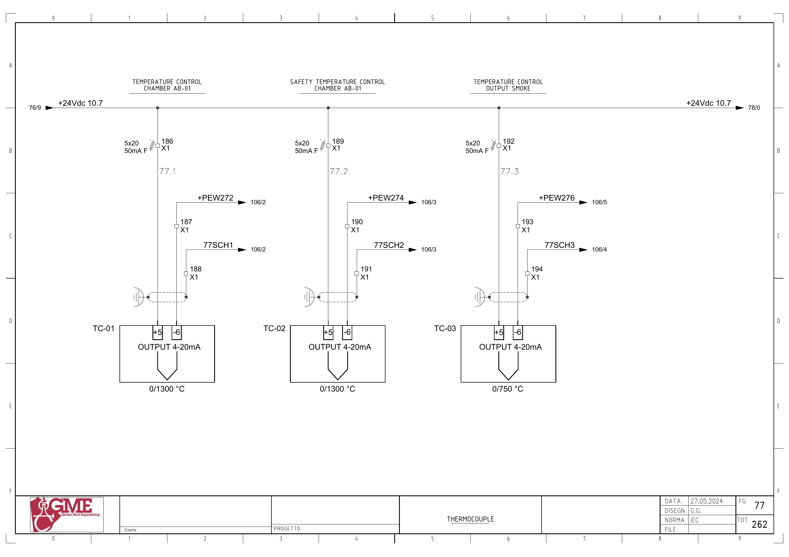
원본 도면 FG106 · PDF107
원본 PDF 열기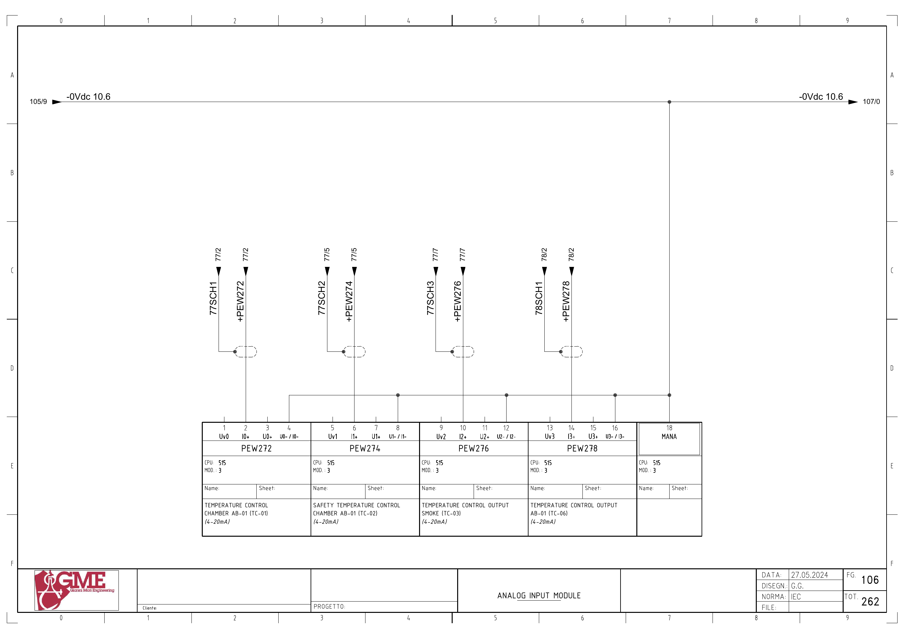
TC02 · 입력부터 사용값까지
| 구간 | 원본·관찰 대상 |
|---|---|
| 백업 심볼 | {"원본 심볼": "tc02", "백업 주소": "%iw274", "자료형": "int", "설명": "safety temperature chamber ab-01", "색인 세그먼트": "_7ev", "문서 ID": "1545"} |
| 센서/전원/단자 경로 | +24Vdc → X1:189(50mA F) → TC02:+5; TC02:-6 → X1:190 → +PEW274; X1:191 / 77SCH2 |
| 모듈 도면 표기 | CPU515 / MOD3 / PEW274: I1+6, U1-/I1-8 0/1300 °C |
| 환산 호출 | 원본 1740 / Part 336 CRefRID 351 / CodeBlock 348 RID 5 호출 앞 en 조건: (ON) IN0 값 핀: ON |
| 각 호출의 값 핀 | IN0 ← ON Analog_input ← TC02 Coeff ← Coeff.COEFF_TC02 Zero ← Coeff.ZERO_TC02 OutValue ← Data.Temp_TC02 Out_of_range ← Allarm.TC02_OFR |
호출 앞 접점·원본 핀배선
| Gate/핀·값 | 원본 식별 |
|---|---|
| Contact/operand / ON | Part 355 / Wire 349 / ORef 342 / RID 1 |
| CRef/IN0 / ON | Part 336 / Wire 350 / ORef 343 / RID 1 |
| CRef/Analog_input / TC02 | Part 336 / Wire 351 / ORef 344 / RID 71 |
| CRef/Coeff / Coeff.COEFF_TC02 | Part 336 / Wire 352 / ORef 345 / RID 72 |
| CRef/Zero / Coeff.ZERO_TC02 | Part 336 / Wire 353 / ORef 346 / RID 73 |
| CRef/OutValue / Data.Temp_TC02 | Part 336 / Wire 354 / ORef 347 / RID 74 |
| CRef/Out_of_range / Allarm.TC02_OFR | Part 336 / Wire 24 / ORef 23 / RID 375 |
증상별 관찰·배제·다음 확인
| 증상 | 확인할 구간 | 결과에 따른 다음 확인·근거 |
|---|---|---|
| 값이0·고정이거나 물리 상태와 다름 | %iw274 원시값과 Data.Temp_TC02을 같은 시각에 기록. +24Vdc → X1:189(50mA F) → TC02:+5; TC02:-6 → X1:190 → +PEW274; X1:191 / 77SCH2 | 원시값도 고정이면 센서·전원·변환기·단자·모듈진단을 구간별로 대조합니다. 원시값이 변하면 IN0/en·각Coeff/Zero·환산·쓰기 위치를 대조합니다. 실제 허가와 모듈 설정은 확인 전입니다. 원본 1740 / Part 336 |
| 변환값이 범위를 벗어나거나 갑자기 변함 | Allarm.TC02_OFR·원시값·환산 직후 값·후속값을 분리합니다. 도면 참고 범위: 0/1300 °C | OFR·범위 이상 -9999와 허가 해제0의 근거를 확인합니다. 계수·영점·현재 단위·정수 자료형·ENO·호출 순서를 대조합니다. 값을 임의로 보정하지 않습니다. 원본 환산·범위 이상 |
| HMI 표시와 PLC값이 맞지 않음 | 참고 OutValue Data.Temp_TC02와 기존 HMI 설정 주소를 비교합니다. 서로 다른 값의 출처·시각·자료형·단위를 기록합니다. | 다른 원본 쓰기가 1곳 있습니다. 아래 정확한 쓰기 목록과 현재 호출을 대조합니다. HMI 설정 행이 없어도 임의 주소를 배정하지 않습니다. |
| 알람이 반복되거나 리셋 뒤 응답이 다름 | 아래 읽기 위치에서 실제 사용 변수·비교값·기억·운전 허가와 최초 알람을 확인합니다. Data.Temp_TC02만으로 원인을 확정하지 않습니다. | 센서 원인 해소·알람 래치·Reset 접점·재기동 허가·최종 출력·물리 응답을 각각 기록합니다. OFR 읽기가 없음을 미사용으로 해석하지 않습니다. 관련 공정 정지·복구 근거 |
원시 입력의 Inputs 복사
| 복사·정적 조건 | 값·근거 |
|---|---|
| Inputs.TC_02 True | TC02 원본 1071 / Part 51 |
환산값의 전체 정확한 Global 쓰기·읽기
| 방향·블록 | 핀·정확한 근거 | 현재 확인 |
|---|---|---|
| write / simulation | 원본 1092 / Part 50 Add/out / Wire 112 / ORef 76 | 백업 simulation 참고 / 현재 호출 확인 전 |
| write / analog input conversion | 원본 1740 / Part 336 CRef/OutValue / Wire 354 / ORef 347 | 현재 실행·값·설정 확인 전 |
| read / allarms 3 | 원본 1986 / Part 748 Gt/in1 / Wire 806 / ORef 785 | 현재 실행·값·설정 확인 전 |
| read / allarms 3 | 원본 1986 / Part 754 Sub/in2 / Wire 811 / ORef 788 | 현재 실행·값·설정 확인 전 |
읽는 비교·연산의 값 출처·자료형·원본 핀
| 읽기 위치·원본 형식 | 접점·비교·값 연결 | ||||||||||||||||||||
|---|---|---|---|---|---|---|---|---|---|---|---|---|---|---|---|---|---|---|---|---|---|
| 원본 1986 / Part 748 [{"attributes": {"Name": "SrcType", "Type": "Type"}, "value": "Int"}] |
| ||||||||||||||||||||
| 원본 1986 / Part 754 [{"attributes": {"Name": "SrcType", "Type": "Type"}, "value": "Int"}] |
|
범위 이상 OFR의 정확한 Global 참조
| 방향·블록 | 핀·정확한 근거 | 현재 확인 |
|---|---|---|
| write / analog input conversion | 원본 1740 / Part 336 CRef/Out_of_range / Wire 24 / ORef 23 | 현재 실행·값·설정 확인 전 |
색인에 읽기가 없더라도 HMI/외부 경보·미복원 자료·현재 프로그램의 사용 여부를 확정하지 않습니다.
기존 HMI 설정 참고
| 태그 | 설정 주소 | Access Name |
|---|---|---|
| I_TC_02 | DB13,INT38 | PLC |
같은 이름의 HMI 설정과 OutValue 사이의 현재 DB멤버·주소·표시환산 연결은 확인 전입니다.
원본 도면 FG77 · PDF78
원본 PDF 열기원본 도면 FG106 · PDF107
원본 PDF 열기TC03 · 입력부터 사용값까지
| 구간 | 원본·관찰 대상 |
|---|---|
| 백업 심볼 | {"원본 심볼": "tc03", "백업 주소": "%iw276", "자료형": "int", "설명": "temperature control outputsmoke", "색인 세그먼트": "_7ev", "문서 ID": "1544"} |
| 센서/전원/단자 경로 | +24Vdc → X1:192(50mA F) → TC03:+5; TC03:-6 → X1:193 → +PEW276; X1:194 / 77SCH3 |
| 모듈 도면 표기 | CPU515 / MOD3 / PEW276: I2+10, U2-/I2-12 0/750 °C |
| 환산 호출 | 원본 1741 / Part 356 CRefRID 351 / CodeBlock 368 RID 5 호출 앞 en 조건: (ON) IN0 값 핀: ON |
| 각 호출의 값 핀 | IN0 ← ON Analog_input ← TC03 Coeff ← Coeff.COEFF_TC03 Zero ← Coeff.ZERO_TC03 OutValue ← Data.Temp_TC03 Out_of_range ← Allarm.TC03_OFR |
호출 앞 접점·원본 핀배선
| Gate/핀·값 | 원본 식별 |
|---|---|
| Contact/operand / ON | Part 375 / Wire 369 / ORef 362 / RID 1 |
| CRef/IN0 / ON | Part 356 / Wire 370 / ORef 363 / RID 1 |
| CRef/Analog_input / TC03 | Part 356 / Wire 371 / ORef 364 / RID 76 |
| CRef/Coeff / Coeff.COEFF_TC03 | Part 356 / Wire 372 / ORef 365 / RID 77 |
| CRef/Zero / Coeff.ZERO_TC03 | Part 356 / Wire 373 / ORef 366 / RID 78 |
| CRef/OutValue / Data.Temp_TC03 | Part 356 / Wire 374 / ORef 367 / RID 79 |
| CRef/Out_of_range / Allarm.TC03_OFR | Part 356 / Wire 24 / ORef 23 / RID 377 |
증상별 관찰·배제·다음 확인
| 증상 | 확인할 구간 | 결과에 따른 다음 확인·근거 |
|---|---|---|
| 값이0·고정이거나 물리 상태와 다름 | %iw276 원시값과 Data.Temp_TC03을 같은 시각에 기록. +24Vdc → X1:192(50mA F) → TC03:+5; TC03:-6 → X1:193 → +PEW276; X1:194 / 77SCH3 | 원시값도 고정이면 센서·전원·변환기·단자·모듈진단을 구간별로 대조합니다. 원시값이 변하면 IN0/en·각Coeff/Zero·환산·쓰기 위치를 대조합니다. 실제 허가와 모듈 설정은 확인 전입니다. 원본 1741 / Part 356 |
| 변환값이 범위를 벗어나거나 갑자기 변함 | Allarm.TC03_OFR·원시값·환산 직후 값·후속값을 분리합니다. 도면 참고 범위: 0/750 °C | OFR·범위 이상 -9999와 허가 해제0의 근거를 확인합니다. 계수·영점·현재 단위·정수 자료형·ENO·호출 순서를 대조합니다. 값을 임의로 보정하지 않습니다. 원본 환산·범위 이상 |
| HMI 표시와 PLC값이 맞지 않음 | 참고 OutValue Data.Temp_TC03와 기존 HMI 설정 주소를 비교합니다. 서로 다른 값의 출처·시각·자료형·단위를 기록합니다. | 다른 원본 쓰기가 0곳 있습니다. 아래 정확한 쓰기 목록과 현재 호출을 대조합니다. HMI 설정 행이 없어도 임의 주소를 배정하지 않습니다. |
| 알람이 반복되거나 리셋 뒤 응답이 다름 | 아래 읽기 위치에서 실제 사용 변수·비교값·기억·운전 허가와 최초 알람을 확인합니다. Data.Temp_TC03만으로 원인을 확정하지 않습니다. | 센서 원인 해소·알람 래치·Reset 접점·재기동 허가·최종 출력·물리 응답을 각각 기록합니다. OFR 읽기가 없음을 미사용으로 해석하지 않습니다. 관련 공정 정지·복구 근거 |
원시 입력의 Inputs 복사
| 복사·정적 조건 | 값·근거 |
|---|---|
| Inputs.TC_03 True | TC03 원본 1071 / Part 72 |
환산값의 전체 정확한 Global 쓰기·읽기
| 방향·블록 | 핀·정확한 근거 | 현재 확인 |
|---|---|---|
| write / analog input conversion | 원본 1741 / Part 356 CRef/OutValue / Wire 374 / ORef 367 | 현재 실행·값·설정 확인 전 |
| read / allarms 3 | 원본 1980 / Part 336 Lt/in1 / Wire 477 / ORef 429 | 현재 실행·값·설정 확인 전 |
| read / allarms 3 | 원본 1980 / Part 356 Gt/in1 / Wire 492 / ORef 439 | 현재 실행·값·설정 확인 전 |
| read / allarms 3 | 원본 1980 / Part 366 Gt/in1 / Wire 498 / ORef 443 | 현재 실행·값·설정 확인 전 |
| read / allarms 3 | 원본 1980 / Part 386 Lt/in1 / Wire 513 / ORef 453 | 현재 실행·값·설정 확인 전 |
| read / allarms 3 | 원본 1980 / Part 403 Gt/in1 / Wire 522 / ORef 460 | 현재 실행·값·설정 확인 전 |
| read / allarms 3 | 원본 1980 / Part 406 Gt/in1 / Wire 525 / ORef 462 | 현재 실행·값·설정 확인 전 |
| read / allarms 3 | 원본 1980 / Part 409 Lt/in1 / Wire 528 / ORef 464 | 현재 실행·값·설정 확인 전 |
읽는 비교·연산의 값 출처·자료형·원본 핀
| 읽기 위치·원본 형식 | 접점·비교·값 연결 | ||||||||||||||||
|---|---|---|---|---|---|---|---|---|---|---|---|---|---|---|---|---|---|
| 원본 1980 / Part 336 [{"attributes": {"Name": "SrcType", "Type": "Type"}, "value": "Int"}] |
| ||||||||||||||||
| 원본 1980 / Part 356 [{"attributes": {"Name": "SrcType", "Type": "Type"}, "value": "Int"}] |
| ||||||||||||||||
| 원본 1980 / Part 366 [{"attributes": {"Name": "SrcType", "Type": "Type"}, "value": "Int"}] |
| ||||||||||||||||
| 원본 1980 / Part 386 [{"attributes": {"Name": "SrcType", "Type": "Type"}, "value": "Int"}] |
| ||||||||||||||||
| 원본 1980 / Part 403 [{"attributes": {"Name": "SrcType", "Type": "Type"}, "value": "Int"}] |
| ||||||||||||||||
| 원본 1980 / Part 406 [{"attributes": {"Name": "SrcType", "Type": "Type"}, "value": "Int"}] |
| ||||||||||||||||
| 원본 1980 / Part 409 [{"attributes": {"Name": "SrcType", "Type": "Type"}, "value": "Int"}] |
|
범위 이상 OFR의 정확한 Global 참조
| 방향·블록 | 핀·정확한 근거 | 현재 확인 |
|---|---|---|
| write / analog input conversion | 원본 1741 / Part 356 CRef/Out_of_range / Wire 24 / ORef 23 | 현재 실행·값·설정 확인 전 |
색인에 읽기가 없더라도 HMI/외부 경보·미복원 자료·현재 프로그램의 사용 여부를 확정하지 않습니다.
기존 HMI 설정 참고
| 태그 | 설정 주소 | Access Name |
|---|---|---|
| Editor_TC03 | DB26,INT20 | PLC |
| I_TC_03 | DB13,INT40 | PLC |
같은 이름의 HMI 설정과 OutValue 사이의 현재 DB멤버·주소·표시환산 연결은 확인 전입니다.
원본 도면 FG77 · PDF78
원본 PDF 열기원본 도면 FG106 · PDF107
원본 PDF 열기TC04 · 입력부터 사용값까지
| 구간 | 원본·관찰 대상 |
|---|---|
| 백업 심볼 | {"원본 심볼": "tc04", "백업 주소": "%iw256", "자료형": "int", "설명": "", "색인 세그먼트": "_7ev", "문서 ID": "1512"} |
| 센서/전원/단자 경로 | PT100 → X1:201/202/203 → 79KA1(PHOENIX CONTACT2864273) 7+/8-/1; 변환기 5+/6- → +PEW256/-PEW256; X1:204 / 79SCH1; 출력실드79SCH2 |
| 모듈 도면 표기 | CPU515 / MOD2 / PEW256: I0+2, U0-/I0-4 FG79 -30~250°C; FG104 -30~250°C |
| 환산 호출 | 원본 1731 / Part 46 CRefRID 351 / CodeBlock 58 RID 5 호출 앞 en 조건: (ON) IN0 값 핀: ON |
| 각 호출의 값 핀 | IN0 ← ON Analog_input ← TC04 Coeff ← Coeff.COEFF_TC04 Zero ← Coeff.ZERO_TC04 OutValue ← Data.Temp_TC04 Out_of_range ← Allarm.TC04_OFR |
호출 앞 접점·원본 핀배선
| Gate/핀·값 | 원본 식별 |
|---|---|
| Contact/operand / ON | Part 65 / Wire 59 / ORef 52 / RID 1 |
| CRef/IN0 / ON | Part 46 / Wire 60 / ORef 53 / RID 1 |
| CRef/Analog_input / TC04 | Part 46 / Wire 61 / ORef 54 / RID 456 |
| CRef/Coeff / Coeff.COEFF_TC04 | Part 46 / Wire 62 / ORef 55 / RID 9 |
| CRef/Zero / Coeff.ZERO_TC04 | Part 46 / Wire 63 / ORef 56 / RID 10 |
| CRef/OutValue / Data.Temp_TC04 | Part 46 / Wire 64 / ORef 57 / RID 12 |
| CRef/Out_of_range / Allarm.TC04_OFR | Part 46 / Wire 24 / ORef 23 / RID 355 |
증상별 관찰·배제·다음 확인
| 증상 | 확인할 구간 | 결과에 따른 다음 확인·근거 |
|---|---|---|
| 값이0·고정이거나 물리 상태와 다름 | %iw256 원시값과 Data.Temp_TC04을 같은 시각에 기록. PT100 → X1:201/202/203 → 79KA1(PHOENIX CONTACT2864273) 7+/8-/1; 변환기 5+/6- → +PEW256/-PEW256; X1:204 / 79SCH1; 출력실드79SCH2 | 원시값도 고정이면 센서·전원·변환기·단자·모듈진단을 구간별로 대조합니다. 원시값이 변하면 IN0/en·각Coeff/Zero·환산·쓰기 위치를 대조합니다. 실제 허가와 모듈 설정은 확인 전입니다. 원본 1731 / Part 46 |
| 변환값이 범위를 벗어나거나 갑자기 변함 | Allarm.TC04_OFR·원시값·환산 직후 값·후속값을 분리합니다. 도면 참고 범위: FG79 -30~250°C; FG104 -30~250°C | OFR·범위 이상 -9999와 허가 해제0의 근거를 확인합니다. 계수·영점·현재 단위·정수 자료형·ENO·호출 순서를 대조합니다. 값을 임의로 보정하지 않습니다. 원본 환산·범위 이상 |
| HMI 표시와 PLC값이 맞지 않음 | 참고 OutValue Data.Temp_TC04와 기존 HMI 설정 주소를 비교합니다. 서로 다른 값의 출처·시각·자료형·단위를 기록합니다. | 다른 원본 쓰기가 0곳 있습니다. 아래 정확한 쓰기 목록과 현재 호출을 대조합니다. HMI 설정 행이 없어도 임의 주소를 배정하지 않습니다. |
| 알람이 반복되거나 리셋 뒤 응답이 다름 | 아래 읽기 위치에서 실제 사용 변수·비교값·기억·운전 허가와 최초 알람을 확인합니다. Data.Temp_TC04만으로 원인을 확정하지 않습니다. | 센서 원인 해소·알람 래치·Reset 접점·재기동 허가·최종 출력·물리 응답을 각각 기록합니다. OFR 읽기가 없음을 미사용으로 해석하지 않습니다. 관련 공정 정지·복구 근거 |
원시 입력의 Inputs 복사
| 복사·정적 조건 | 값·근거 |
|---|---|
| Inputs.TC_04 True | TC04 원본 1071 / Part 22 |
환산값의 전체 정확한 Global 쓰기·읽기
| 방향·블록 | 핀·정확한 근거 | 현재 확인 |
|---|---|---|
| write / analog input conversion | 원본 1731 / Part 46 CRef/OutValue / Wire 64 / ORef 57 | 현재 실행·값·설정 확인 전 |
| read / allarms 3 | 원본 1981 / Part 438 Gt/in1 / Wire 516 / ORef 490 | 현재 실행·값·설정 확인 전 |
| read / allarms 3 | 원본 1981 / Part 441 Gt/in1 / Wire 519 / ORef 492 | 현재 실행·값·설정 확인 전 |
| read / allarms 3 | 원본 1981 / Part 444 Lt/in1 / Wire 522 / ORef 494 | 현재 실행·값·설정 확인 전 |
읽는 비교·연산의 값 출처·자료형·원본 핀
| 읽기 위치·원본 형식 | 접점·비교·값 연결 | ||||||||
|---|---|---|---|---|---|---|---|---|---|
| 원본 1981 / Part 438 [{"attributes": {"Name": "SrcType", "Type": "Type"}, "value": "Int"}] |
| ||||||||
| 원본 1981 / Part 441 [{"attributes": {"Name": "SrcType", "Type": "Type"}, "value": "Int"}] |
| ||||||||
| 원본 1981 / Part 444 [{"attributes": {"Name": "SrcType", "Type": "Type"}, "value": "Int"}] |
|
범위 이상 OFR의 정확한 Global 참조
| 방향·블록 | 핀·정확한 근거 | 현재 확인 |
|---|---|---|
| write / analog input conversion | 원본 1731 / Part 46 CRef/Out_of_range / Wire 24 / ORef 23 | 현재 실행·값·설정 확인 전 |
색인에 읽기가 없더라도 HMI/외부 경보·미복원 자료·현재 프로그램의 사용 여부를 확정하지 않습니다.
기존 HMI 설정 참고
| 태그 | 설정 주소 | Access Name |
|---|---|---|
| I_TC_04 | DB13,INT24 | PLC |
같은 이름의 HMI 설정과 OutValue 사이의 현재 DB멤버·주소·표시환산 연결은 확인 전입니다.
원본 도면 FG79 · PDF80
원본 PDF 열기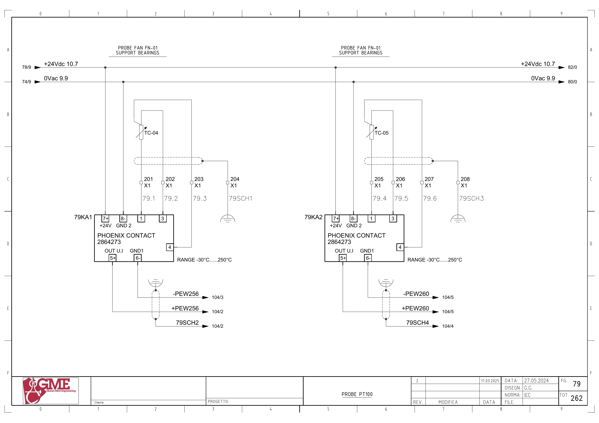
원본 도면 FG104 · PDF105
원본 PDF 열기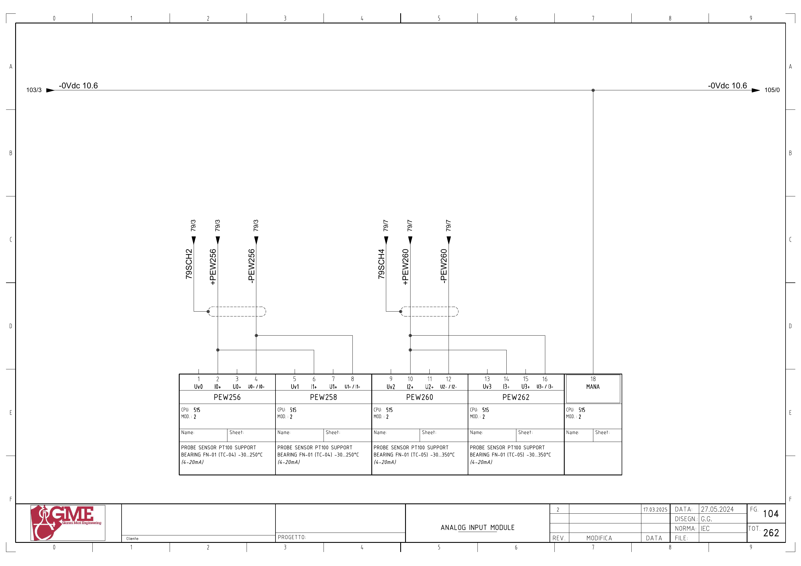
TC05 · 입력부터 사용값까지
| 구간 | 원본·관찰 대상 |
|---|---|
| 백업 심볼 | {"원본 심볼": "tc05", "백업 주소": "%iw260", "자료형": "int", "설명": "probe sensor pt100 bearing fn-01 (tc-04) -30...250°c", "색인 세그먼트": "_7ev", "문서 ID": "1511"} |
| 센서/전원/단자 경로 | PT100 → X1:205/206/207 → 79KA2(PHOENIX CONTACT2864273) 7+/8-/1; 변환기 5+/6- → +PEW260/-PEW260; X1:208 / 79SCH3; 출력실드79SCH4 |
| 모듈 도면 표기 | CPU515 / MOD2 / PEW260: I2+10, U2-/I2-12 FG79 -30~250°C; FG104 -30~350°C / 범위 확인 필요 |
| 환산 호출 | 원본 1732 / Part 66 CRefRID 351 / CodeBlock 78 RID 5 호출 앞 en 조건: (OFF) IN0 값 핀: ON |
| 각 호출의 값 핀 | IN0 ← ON Analog_input ← TC05 Coeff ← Coeff.COEFF_TC05 Zero ← Coeff.ZERO_TC05 OutValue ← Data.Temp_TC05 Out_of_range ← Allarm.TC05_OFR |
호출 앞 접점·원본 핀배선
| Gate/핀·값 | 원본 식별 |
|---|---|
| Contact/operand / OFF | Part 85 / Wire 79 / ORef 72 / RID 34 |
| CRef/IN0 / ON | Part 66 / Wire 80 / ORef 73 / RID 1 |
| CRef/Analog_input / TC05 | Part 66 / Wire 81 / ORef 74 / RID 457 |
| CRef/Coeff / Coeff.COEFF_TC05 | Part 66 / Wire 82 / ORef 75 / RID 15 |
| CRef/Zero / Coeff.ZERO_TC05 | Part 66 / Wire 83 / ORef 76 / RID 16 |
| CRef/OutValue / Data.Temp_TC05 | Part 66 / Wire 84 / ORef 77 / RID 17 |
| CRef/Out_of_range / Allarm.TC05_OFR | Part 66 / Wire 24 / ORef 23 / RID 357 |
증상별 관찰·배제·다음 확인
| 증상 | 확인할 구간 | 결과에 따른 다음 확인·근거 |
|---|---|---|
| 값이0·고정이거나 물리 상태와 다름 | %iw260 원시값과 Data.Temp_TC05을 같은 시각에 기록. PT100 → X1:205/206/207 → 79KA2(PHOENIX CONTACT2864273) 7+/8-/1; 변환기 5+/6- → +PEW260/-PEW260; X1:208 / 79SCH3; 출력실드79SCH4 | 원시값도 고정이면 센서·전원·변환기·단자·모듈진단을 구간별로 대조합니다. 원시값이 변하면 IN0/en·각Coeff/Zero·환산·쓰기 위치를 대조합니다. 실제 허가와 모듈 설정은 확인 전입니다. 원본 1732 / Part 66 |
| 변환값이 범위를 벗어나거나 갑자기 변함 | Allarm.TC05_OFR·원시값·환산 직후 값·후속값을 분리합니다. 도면 참고 범위: FG79 -30~250°C; FG104 -30~350°C / 범위 확인 필요 | OFR·범위 이상 -9999와 허가 해제0의 근거를 확인합니다. 계수·영점·현재 단위·정수 자료형·ENO·호출 순서를 대조합니다. 값을 임의로 보정하지 않습니다. 원본 환산·범위 이상 |
| HMI 표시와 PLC값이 맞지 않음 | 참고 OutValue Data.Temp_TC05와 기존 HMI 설정 주소를 비교합니다. 서로 다른 값의 출처·시각·자료형·단위를 기록합니다. | 다른 원본 쓰기가 0곳 있습니다. 아래 정확한 쓰기 목록과 현재 호출을 대조합니다. HMI 설정 행이 없어도 임의 주소를 배정하지 않습니다. |
| 알람이 반복되거나 리셋 뒤 응답이 다름 | 아래 읽기 위치에서 실제 사용 변수·비교값·기억·운전 허가와 최초 알람을 확인합니다. Data.Temp_TC05만으로 원인을 확정하지 않습니다. | 센서 원인 해소·알람 래치·Reset 접점·재기동 허가·최종 출력·물리 응답을 각각 기록합니다. OFR 읽기가 없음을 미사용으로 해석하지 않습니다. 관련 공정 정지·복구 근거 |
원시 입력의 Inputs 복사
| 복사·정적 조건 | 값·근거 |
|---|---|
| Inputs.TC_05 True | TC05 원본 1071 / Part 27 |
환산값의 전체 정확한 Global 쓰기·읽기
| 방향·블록 | 핀·정확한 근거 | 현재 확인 |
|---|---|---|
| write / analog input conversion | 원본 1732 / Part 66 CRef/OutValue / Wire 84 / ORef 77 | 현재 실행·값·설정 확인 전 |
| read / allarms 3 | 원본 1981 / Part 459 Gt/in1 / Wire 532 / ORef 500 | 현재 실행·값·설정 확인 전 |
| read / allarms 3 | 원본 1981 / Part 462 Gt/in1 / Wire 535 / ORef 502 | 현재 실행·값·설정 확인 전 |
| read / allarms 3 | 원본 1981 / Part 465 Lt/in1 / Wire 538 / ORef 504 | 현재 실행·값·설정 확인 전 |
읽는 비교·연산의 값 출처·자료형·원본 핀
| 읽기 위치·원본 형식 | 접점·비교·값 연결 | ||||||||
|---|---|---|---|---|---|---|---|---|---|
| 원본 1981 / Part 459 [{"attributes": {"Name": "SrcType", "Type": "Type"}, "value": "Int"}] |
| ||||||||
| 원본 1981 / Part 462 [{"attributes": {"Name": "SrcType", "Type": "Type"}, "value": "Int"}] |
| ||||||||
| 원본 1981 / Part 465 [{"attributes": {"Name": "SrcType", "Type": "Type"}, "value": "Int"}] |
|
범위 이상 OFR의 정확한 Global 참조
| 방향·블록 | 핀·정확한 근거 | 현재 확인 |
|---|---|---|
| write / analog input conversion | 원본 1732 / Part 66 CRef/Out_of_range / Wire 24 / ORef 23 | 현재 실행·값·설정 확인 전 |
색인에 읽기가 없더라도 HMI/외부 경보·미복원 자료·현재 프로그램의 사용 여부를 확정하지 않습니다.
기존 HMI 설정 참고
| 태그 | 설정 주소 | Access Name |
|---|---|---|
| I_TC_05 | DB13,INT26 | PLC |
같은 이름의 HMI 설정과 OutValue 사이의 현재 DB멤버·주소·표시환산 연결은 확인 전입니다.
원본 도면 FG79 · PDF80
원본 PDF 열기원본 도면 FG104 · PDF105
원본 PDF 열기TC06 · 입력부터 사용값까지
| 구간 | 원본·관찰 대상 |
|---|---|
| 백업 심볼 | {"원본 심볼": "tc06", "백업 주소": "%iw278", "자료형": "int", "설명": "temperature control outputab-01", "색인 세그먼트": "_7ev", "문서 ID": "1543"} |
| 센서/전원/단자 경로 | +24Vdc → X1:195(50mA F) → TC06:+5; TC06:-6 → X1:196 → +PEW278; X1:197 / 78SCH1 |
| 모듈 도면 표기 | CPU515 / MOD3 / PEW278: I3+14, U3-/I3-16 0/1300 °C |
| 환산 호출 | 원본 1742 / Part 376 CRefRID 351 / CodeBlock 388 RID 5 호출 앞 en 조건: (ON) IN0 값 핀: ON |
| 각 호출의 값 핀 | IN0 ← ON Analog_input ← TC06 Coeff ← Coeff.COEFF_TC06 Zero ← Coeff.ZERO_TC06 OutValue ← Data.Temp_T6 Out_of_range ← Allarm.TC06_OFR |
호출 앞 접점·원본 핀배선
| Gate/핀·값 | 원본 식별 |
|---|---|
| Contact/operand / ON | Part 395 / Wire 389 / ORef 382 / RID 1 |
| CRef/IN0 / ON | Part 376 / Wire 390 / ORef 383 / RID 1 |
| CRef/Analog_input / TC06 | Part 376 / Wire 391 / ORef 384 / RID 81 |
| CRef/Coeff / Coeff.COEFF_TC06 | Part 376 / Wire 392 / ORef 385 / RID 82 |
| CRef/Zero / Coeff.ZERO_TC06 | Part 376 / Wire 393 / ORef 386 / RID 83 |
| CRef/OutValue / Data.Temp_T6 | Part 376 / Wire 394 / ORef 387 / RID 84 |
| CRef/Out_of_range / Allarm.TC06_OFR | Part 376 / Wire 24 / ORef 23 / RID 379 |
증상별 관찰·배제·다음 확인
| 증상 | 확인할 구간 | 결과에 따른 다음 확인·근거 |
|---|---|---|
| 값이0·고정이거나 물리 상태와 다름 | %iw278 원시값과 Data.Temp_T6을 같은 시각에 기록. +24Vdc → X1:195(50mA F) → TC06:+5; TC06:-6 → X1:196 → +PEW278; X1:197 / 78SCH1 | 원시값도 고정이면 센서·전원·변환기·단자·모듈진단을 구간별로 대조합니다. 원시값이 변하면 IN0/en·각Coeff/Zero·환산·쓰기 위치를 대조합니다. 실제 허가와 모듈 설정은 확인 전입니다. 원본 1742 / Part 376 |
| 변환값이 범위를 벗어나거나 갑자기 변함 | Allarm.TC06_OFR·원시값·환산 직후 값·후속값을 분리합니다. 도면 참고 범위: 0/1300 °C | OFR·범위 이상 -9999와 허가 해제0의 근거를 확인합니다. 계수·영점·현재 단위·정수 자료형·ENO·호출 순서를 대조합니다. 값을 임의로 보정하지 않습니다. 원본 환산·범위 이상 |
| HMI 표시와 PLC값이 맞지 않음 | 참고 OutValue Data.Temp_T6와 기존 HMI 설정 주소를 비교합니다. 서로 다른 값의 출처·시각·자료형·단위를 기록합니다. | 다른 원본 쓰기가 0곳 있습니다. 아래 정확한 쓰기 목록과 현재 호출을 대조합니다. HMI 설정 행이 없어도 임의 주소를 배정하지 않습니다. |
| 알람이 반복되거나 리셋 뒤 응답이 다름 | 아래 읽기 위치에서 실제 사용 변수·비교값·기억·운전 허가와 최초 알람을 확인합니다. Data.Temp_T6만으로 원인을 확정하지 않습니다. | 센서 원인 해소·알람 래치·Reset 접점·재기동 허가·최종 출력·물리 응답을 각각 기록합니다. OFR 읽기가 없음을 미사용으로 해석하지 않습니다. 관련 공정 정지·복구 근거 |
원시 입력의 Inputs 복사
| 복사·정적 조건 | 값·근거 |
|---|---|
| Inputs.TC_06 True | TC06 원본 1071 / Part 73 |
환산값의 전체 정확한 Global 쓰기·읽기
| 방향·블록 | 핀·정확한 근거 | 현재 확인 |
|---|---|---|
| write / analog input conversion | 원본 1742 / Part 376 CRef/OutValue / Wire 394 / ORef 387 | 현재 실행·값·설정 확인 전 |
범위 이상 OFR의 정확한 Global 참조
| 방향·블록 | 핀·정확한 근거 | 현재 확인 |
|---|---|---|
| write / analog input conversion | 원본 1742 / Part 376 CRef/Out_of_range / Wire 24 / ORef 23 | 현재 실행·값·설정 확인 전 |
색인에 읽기가 없더라도 HMI/외부 경보·미복원 자료·현재 프로그램의 사용 여부를 확정하지 않습니다.
기존 HMI 설정 참고
| 태그 | 설정 주소 | Access Name |
|---|---|---|
| I_TC_06 | DB13,INT42 | PLC |
같은 이름의 HMI 설정과 OutValue 사이의 현재 DB멤버·주소·표시환산 연결은 확인 전입니다.
원본 도면 FG78 · PDF79
원본 PDF 열기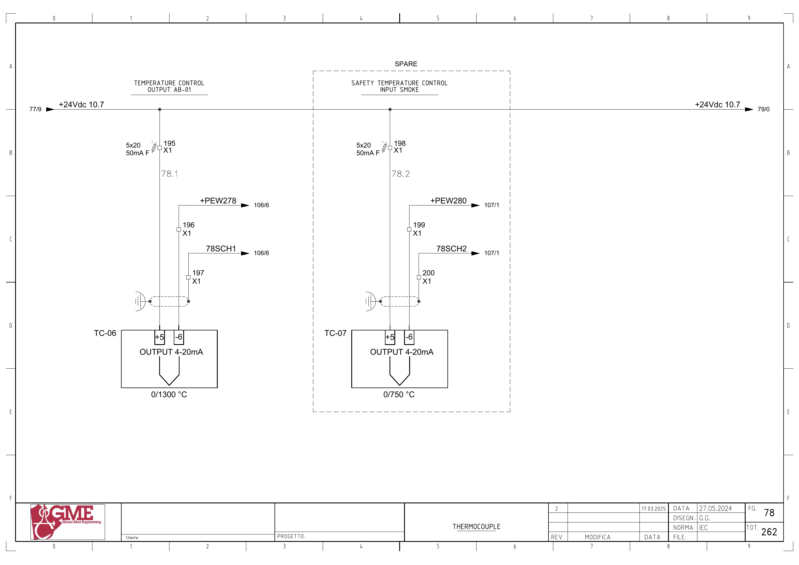
원본 도면 FG106 · PDF107
원본 PDF 열기TC07 · 입력부터 사용값까지
| 구간 | 원본·관찰 대상 |
|---|---|
| 백업 심볼 | {"원본 심볼": "tc07", "백업 주소": "%iw280", "자료형": "int", "설명": "temperature control inputsmoke", "색인 세그먼트": "_7ev", "문서 ID": "1542"} |
| 센서/전원/단자 경로 | +24Vdc → X1:198(50mA F) → TC07:+5; TC07:-6 → X1:199 → +PEW280; X1:200 / 78SCH2; FG78·107 SPARE 표기 |
| 모듈 도면 표기 | CPU515 / MOD3 / PEW280: I4+22, U4-/I4-24 0/750 °C / FG78 SPARE 경계 |
| 환산 호출 | 원본 1743 / Part 396 CRefRID 351 / CodeBlock 408 RID 5 호출 앞 en 조건: (OFF) IN0 값 핀: ON |
| 각 호출의 값 핀 | IN0 ← ON Analog_input ← TC07 Coeff ← Coeff.COEFF_TC07 Zero ← Coeff.ZERO_TC07 OutValue ← Data.TC_07 Out_of_range ← Allarm.TC07_OFR |
호출 앞 접점·원본 핀배선
| Gate/핀·값 | 원본 식별 |
|---|---|
| Contact/operand / OFF | Part 415 / Wire 409 / ORef 402 / RID 34 |
| CRef/IN0 / ON | Part 396 / Wire 410 / ORef 403 / RID 1 |
| CRef/Analog_input / TC07 | Part 396 / Wire 411 / ORef 404 / RID 86 |
| CRef/Coeff / Coeff.COEFF_TC07 | Part 396 / Wire 412 / ORef 405 / RID 87 |
| CRef/Zero / Coeff.ZERO_TC07 | Part 396 / Wire 413 / ORef 406 / RID 88 |
| CRef/OutValue / Data.TC_07 | Part 396 / Wire 414 / ORef 407 / RID 89 |
| CRef/Out_of_range / Allarm.TC07_OFR | Part 396 / Wire 24 / ORef 23 / RID 381 |
증상별 관찰·배제·다음 확인
| 증상 | 확인할 구간 | 결과에 따른 다음 확인·근거 |
|---|---|---|
| 값이0·고정이거나 물리 상태와 다름 | %iw280 원시값과 Data.TC_07을 같은 시각에 기록. +24Vdc → X1:198(50mA F) → TC07:+5; TC07:-6 → X1:199 → +PEW280; X1:200 / 78SCH2; FG78·107 SPARE 표기 | 원시값도 고정이면 센서·전원·변환기·단자·모듈진단을 구간별로 대조합니다. 원시값이 변하면 IN0/en·각Coeff/Zero·환산·쓰기 위치를 대조합니다. 실제 허가와 모듈 설정은 확인 전입니다. 원본 1743 / Part 396 |
| 변환값이 범위를 벗어나거나 갑자기 변함 | Allarm.TC07_OFR·원시값·환산 직후 값·후속값을 분리합니다. 도면 참고 범위: 0/750 °C / FG78 SPARE 경계 | OFR·범위 이상 -9999와 허가 해제0의 근거를 확인합니다. 계수·영점·현재 단위·정수 자료형·ENO·호출 순서를 대조합니다. 값을 임의로 보정하지 않습니다. 원본 환산·범위 이상 |
| HMI 표시와 PLC값이 맞지 않음 | 참고 OutValue Data.TC_07와 기존 HMI 설정 주소를 비교합니다. 서로 다른 값의 출처·시각·자료형·단위를 기록합니다. | 다른 원본 쓰기가 0곳 있습니다. 아래 정확한 쓰기 목록과 현재 호출을 대조합니다. HMI 설정 행이 없어도 임의 주소를 배정하지 않습니다. |
| 알람이 반복되거나 리셋 뒤 응답이 다름 | 아래 읽기 위치에서 실제 사용 변수·비교값·기억·운전 허가와 최초 알람을 확인합니다. Data.TC_07만으로 원인을 확정하지 않습니다. | 센서 원인 해소·알람 래치·Reset 접점·재기동 허가·최종 출력·물리 응답을 각각 기록합니다. OFR 읽기가 없음을 미사용으로 해석하지 않습니다. 관련 공정 정지·복구 근거 |
원시 입력의 Inputs 복사
| 복사·정적 조건 | 값·근거 |
|---|---|
| Inputs.TC_07 True | TC07 원본 1071 / Part 74 |
환산값의 전체 정확한 Global 쓰기·읽기
| 방향·블록 | 핀·정확한 근거 | 현재 확인 |
|---|---|---|
| write / analog input conversion | 원본 1743 / Part 396 CRef/OutValue / Wire 414 / ORef 407 | 현재 실행·값·설정 확인 전 |
범위 이상 OFR의 정확한 Global 참조
| 방향·블록 | 핀·정확한 근거 | 현재 확인 |
|---|---|---|
| write / analog input conversion | 원본 1743 / Part 396 CRef/Out_of_range / Wire 24 / ORef 23 | 현재 실행·값·설정 확인 전 |
색인에 읽기가 없더라도 HMI/외부 경보·미복원 자료·현재 프로그램의 사용 여부를 확정하지 않습니다.
기존 HMI 설정 참고
| 태그 | 설정 주소 | Access Name |
|---|---|---|
| I_TC_07 | DB13,INT44 | PLC |
같은 이름의 HMI 설정과 OutValue 사이의 현재 DB멤버·주소·표시환산 연결은 확인 전입니다.
원본 도면 FG78 · PDF79
원본 PDF 열기원본 도면 FG107 · PDF108
원본 PDF 열기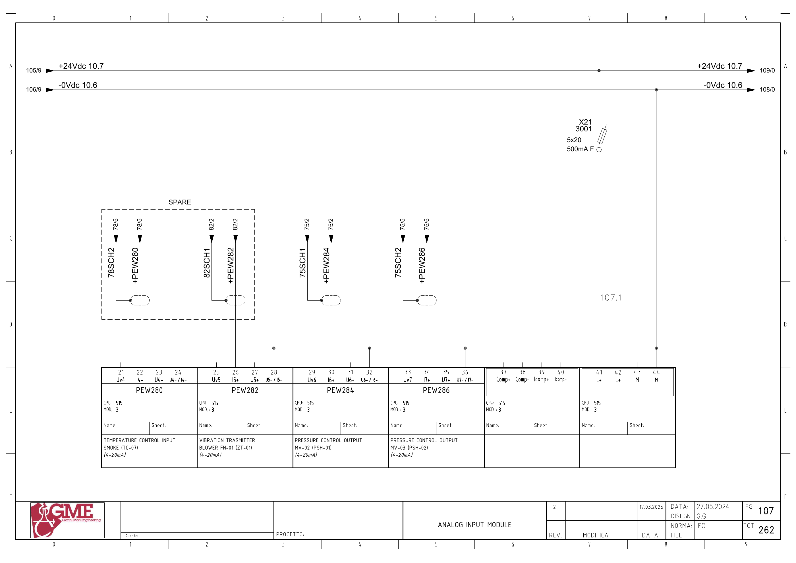
TC09 · 입력부터 사용값까지
| 구간 | 원본·관찰 대상 |
|---|---|
| 백업 심볼 | {"원본 심볼": "tc09", "백업 주소": "%iw386", "자료형": "int", "설명": "temperature bf-01", "색인 세그먼트": "_7ev", "문서 ID": "1555"} |
| 센서/전원/단자 경로 | TC09 도면4선 → X3:100/101/102/103 → +PEW386/-PEW386/+PEW388/-PEW388; X3:104 / 171SCH1. PLC 호출은TC09(%IW386); PEW388을 별도 실제 센서로 배정하지 않음 |
| 모듈 도면 표기 | CPU515 / MOD2 / PEW386: I0+2, U0-/I0-4; PEW388: I1+6, U1-/I1-8 별도 범위 미표기 / 현재 설정 확인 |
| 환산 호출 | 원본 1733 / Part 86 CRefRID 351 / CodeBlock 98 RID 5 호출 앞 en 조건: (ON) IN0 값 핀: ON |
| 각 호출의 값 핀 | IN0 ← ON Analog_input ← TC09 Coeff ← Coeff.COEFF_TC09 Zero ← Coeff.ZERO_TC09 OutValue ← Data.TC_09 Out_of_range ← Allarm.TC09_OFR |
호출 앞 접점·원본 핀배선
| Gate/핀·값 | 원본 식별 |
|---|---|
| Contact/operand / ON | Part 105 / Wire 99 / ORef 92 / RID 1 |
| CRef/IN0 / ON | Part 86 / Wire 100 / ORef 93 / RID 1 |
| CRef/Analog_input / TC09 | Part 86 / Wire 101 / ORef 94 / RID 19 |
| CRef/Coeff / Coeff.COEFF_TC09 | Part 86 / Wire 102 / ORef 95 / RID 20 |
| CRef/Zero / Coeff.ZERO_TC09 | Part 86 / Wire 103 / ORef 96 / RID 21 |
| CRef/OutValue / Data.TC_09 | Part 86 / Wire 104 / ORef 97 / RID 22 |
| CRef/Out_of_range / Allarm.TC09_OFR | Part 86 / Wire 24 / ORef 23 / RID 359 |
증상별 관찰·배제·다음 확인
| 증상 | 확인할 구간 | 결과에 따른 다음 확인·근거 |
|---|---|---|
| 값이0·고정이거나 물리 상태와 다름 | %iw386 원시값과 Data.TC_09을 같은 시각에 기록. TC09 도면4선 → X3:100/101/102/103 → +PEW386/-PEW386/+PEW388/-PEW388; X3:104 / 171SCH1. PLC 호출은TC09(%IW386); PEW388을 별도 실제 센서로 배정하지 않음 | 원시값도 고정이면 센서·전원·변환기·단자·모듈진단을 구간별로 대조합니다. 원시값이 변하면 IN0/en·각Coeff/Zero·환산·쓰기 위치를 대조합니다. 실제 허가와 모듈 설정은 확인 전입니다. 원본 1733 / Part 86 |
| 변환값이 범위를 벗어나거나 갑자기 변함 | Allarm.TC09_OFR·원시값·환산 직후 값·후속값을 분리합니다. 도면 참고 범위: 별도 범위 미표기 / 현재 설정 확인 | OFR·범위 이상 -9999와 허가 해제0의 근거를 확인합니다. 계수·영점·현재 단위·정수 자료형·ENO·호출 순서를 대조합니다. 값을 임의로 보정하지 않습니다. 원본 환산·범위 이상 |
| HMI 표시와 PLC값이 맞지 않음 | 참고 OutValue Data.TC_09와 기존 HMI 설정 주소를 비교합니다. 서로 다른 값의 출처·시각·자료형·단위를 기록합니다. | 다른 원본 쓰기가 0곳 있습니다. 아래 정확한 쓰기 목록과 현재 호출을 대조합니다. HMI 설정 행이 없어도 임의 주소를 배정하지 않습니다. |
| 알람이 반복되거나 리셋 뒤 응답이 다름 | 아래 읽기 위치에서 실제 사용 변수·비교값·기억·운전 허가와 최초 알람을 확인합니다. Data.TC_09만으로 원인을 확정하지 않습니다. | 센서 원인 해소·알람 래치·Reset 접점·재기동 허가·최종 출력·물리 응답을 각각 기록합니다. OFR 읽기가 없음을 미사용으로 해석하지 않습니다. 관련 공정 정지·복구 근거 |
원시 입력의 Inputs 복사
원본1071에서 이 심볼의 Inputs 복사는 확인하지 못했습니다. 다른 블록/현재 전달은 별도 확인합니다.
환산값의 전체 정확한 Global 쓰기·읽기
| 방향·블록 | 핀·정확한 근거 | 현재 확인 |
|---|---|---|
| write / analog input conversion | 원본 1733 / Part 86 CRef/OutValue / Wire 104 / ORef 97 | 현재 실행·값·설정 확인 전 |
| read / allarms 3 | 원본 1991 / Part 1046 Gt/in1 / Wire 1131 / ORef 1102 | 현재 실행·값·설정 확인 전 |
| read / allarms 3 | 원본 1991 / Part 1057 Gt/in1 / Wire 1140 / ORef 1108 | 현재 실행·값·설정 확인 전 |
| read / allarms 3 | 원본 1991 / Part 1068 Lt/in1 / Wire 1149 / ORef 1114 | 현재 실행·값·설정 확인 전 |
| read / allarms 3 | 원본 1991 / Part 1086 Gt/in1 / Wire 1158 / ORef 1120 | 현재 실행·값·설정 확인 전 |
| read / allarms 3 | 원본 1991 / Part 1089 Gt/in1 / Wire 1161 / ORef 1122 | 현재 실행·값·설정 확인 전 |
| read / allarms 3 | 원본 1991 / Part 1092 Lt/in1 / Wire 1164 / ORef 1124 | 현재 실행·값·설정 확인 전 |
읽는 비교·연산의 값 출처·자료형·원본 핀
| 읽기 위치·원본 형식 | 접점·비교·값 연결 | ||||||||||||||
|---|---|---|---|---|---|---|---|---|---|---|---|---|---|---|---|
| 원본 1991 / Part 1046 [{"attributes": {"Name": "SrcType", "Type": "Type"}, "value": "Int"}] |
| ||||||||||||||
| 원본 1991 / Part 1057 [{"attributes": {"Name": "SrcType", "Type": "Type"}, "value": "Int"}] |
| ||||||||||||||
| 원본 1991 / Part 1068 [{"attributes": {"Name": "SrcType", "Type": "Type"}, "value": "Int"}] |
| ||||||||||||||
| 원본 1991 / Part 1086 [{"attributes": {"Name": "SrcType", "Type": "Type"}, "value": "Int"}] |
| ||||||||||||||
| 원본 1991 / Part 1089 [{"attributes": {"Name": "SrcType", "Type": "Type"}, "value": "Int"}] |
| ||||||||||||||
| 원본 1991 / Part 1092 [{"attributes": {"Name": "SrcType", "Type": "Type"}, "value": "Int"}] |
|
범위 이상 OFR의 정확한 Global 참조
| 방향·블록 | 핀·정확한 근거 | 현재 확인 |
|---|---|---|
| write / analog input conversion | 원본 1733 / Part 86 CRef/Out_of_range / Wire 24 / ORef 23 | 현재 실행·값·설정 확인 전 |
색인에 읽기가 없더라도 HMI/외부 경보·미복원 자료·현재 프로그램의 사용 여부를 확정하지 않습니다.
기존 HMI 설정 참고
기존 설비별 HMI 분류에서 이 ID의 행을 확인하지 못했습니다. HMI가 없다는 뜻은 아니며 다른 이름·현재 주소는 추가 확인합니다.
같은 이름의 HMI 설정과 OutValue 사이의 현재 DB멤버·주소·표시환산 연결은 확인 전입니다.
원본 도면 FG171 · PDF172
원본 PDF 열기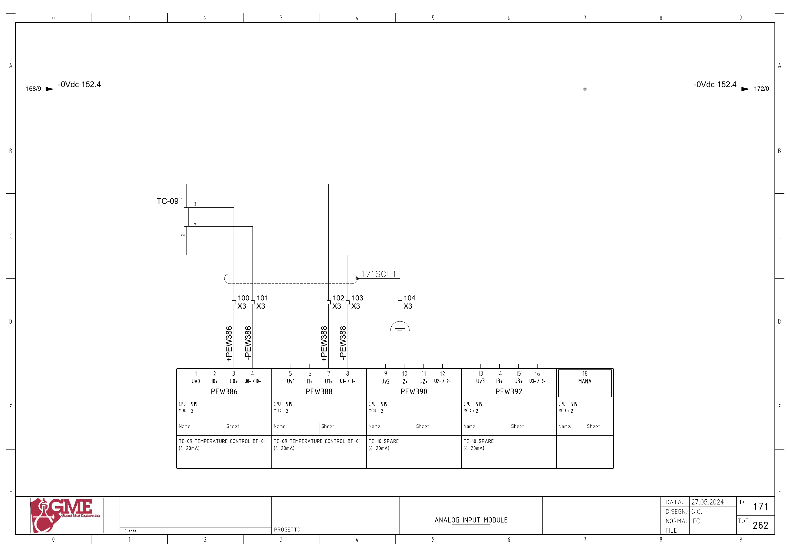
TC10 · 입력부터 사용값까지
| 구간 | 원본·관찰 대상 |
|---|---|
| 백업 심볼 | {"원본 심볼": "tc-10", "백업 주소": "%iw390", "자료형": "int", "설명": "spare temperature", "색인 세그먼트": "_7ev", "문서 ID": "1554"} |
| 센서/전원/단자 경로 | FG171 PEW390/392는SPARE 표기이며 현장 센서·배선 연결 미확정. 원본 호출의TC-10(%IW390)을 보존 |
| 모듈 도면 표기 | CPU515 / MOD2 / PEW390: I2+10, U2-/I2-12; PEW392: I3+14, U3-/I3-16 TC-10 SPARE / 센서·범위 확인 전 |
| 환산 호출 | 원본 1734 / Part 106 CRefRID 351 / CodeBlock 118 RID 5 호출 앞 en 조건: (OFF) IN0 값 핀: ON |
| 각 호출의 값 핀 | IN0 ← ON Analog_input ← TC-10 Coeff ← Coeff.COEFF_TC10 Zero ← Coeff.ZERO_TC10 OutValue ← Data.TC_10 Out_of_range ← Allarm.TC10_OFR |
호출 앞 접점·원본 핀배선
| Gate/핀·값 | 원본 식별 |
|---|---|
| Contact/operand / OFF | Part 125 / Wire 119 / ORef 112 / RID 34 |
| CRef/IN0 / ON | Part 106 / Wire 120 / ORef 113 / RID 1 |
| CRef/Analog_input / TC-10 | Part 106 / Wire 121 / ORef 114 / RID 24 |
| CRef/Coeff / Coeff.COEFF_TC10 | Part 106 / Wire 122 / ORef 115 / RID 25 |
| CRef/Zero / Coeff.ZERO_TC10 | Part 106 / Wire 123 / ORef 116 / RID 26 |
| CRef/OutValue / Data.TC_10 | Part 106 / Wire 124 / ORef 117 / RID 27 |
| CRef/Out_of_range / Allarm.TC10_OFR | Part 106 / Wire 24 / ORef 23 / RID 361 |
증상별 관찰·배제·다음 확인
| 증상 | 확인할 구간 | 결과에 따른 다음 확인·근거 |
|---|---|---|
| 값이0·고정이거나 물리 상태와 다름 | %iw390 원시값과 Data.TC_10을 같은 시각에 기록. FG171 PEW390/392는SPARE 표기이며 현장 센서·배선 연결 미확정. 원본 호출의TC-10(%IW390)을 보존 | 원시값도 고정이면 센서·전원·변환기·단자·모듈진단을 구간별로 대조합니다. 원시값이 변하면 IN0/en·각Coeff/Zero·환산·쓰기 위치를 대조합니다. 실제 허가와 모듈 설정은 확인 전입니다. 원본 1734 / Part 106 |
| 변환값이 범위를 벗어나거나 갑자기 변함 | Allarm.TC10_OFR·원시값·환산 직후 값·후속값을 분리합니다. 도면 참고 범위: TC-10 SPARE / 센서·범위 확인 전 | OFR·범위 이상 -9999와 허가 해제0의 근거를 확인합니다. 계수·영점·현재 단위·정수 자료형·ENO·호출 순서를 대조합니다. 값을 임의로 보정하지 않습니다. 원본 환산·범위 이상 |
| HMI 표시와 PLC값이 맞지 않음 | 참고 OutValue Data.TC_10와 기존 HMI 설정 주소를 비교합니다. 서로 다른 값의 출처·시각·자료형·단위를 기록합니다. | 다른 원본 쓰기가 0곳 있습니다. 아래 정확한 쓰기 목록과 현재 호출을 대조합니다. HMI 설정 행이 없어도 임의 주소를 배정하지 않습니다. |
| 알람이 반복되거나 리셋 뒤 응답이 다름 | 아래 읽기 위치에서 실제 사용 변수·비교값·기억·운전 허가와 최초 알람을 확인합니다. Data.TC_10만으로 원인을 확정하지 않습니다. | 센서 원인 해소·알람 래치·Reset 접점·재기동 허가·최종 출력·물리 응답을 각각 기록합니다. OFR 읽기가 없음을 미사용으로 해석하지 않습니다. 관련 공정 정지·복구 근거 |
원시 입력의 Inputs 복사
원본1071에서 이 심볼의 Inputs 복사는 확인하지 못했습니다. 다른 블록/현재 전달은 별도 확인합니다.
환산값의 전체 정확한 Global 쓰기·읽기
| 방향·블록 | 핀·정확한 근거 | 현재 확인 |
|---|---|---|
| write / analog input conversion | 원본 1734 / Part 106 CRef/OutValue / Wire 124 / ORef 117 | 현재 실행·값·설정 확인 전 |
범위 이상 OFR의 정확한 Global 참조
| 방향·블록 | 핀·정확한 근거 | 현재 확인 |
|---|---|---|
| write / analog input conversion | 원본 1734 / Part 106 CRef/Out_of_range / Wire 24 / ORef 23 | 현재 실행·값·설정 확인 전 |
색인에 읽기가 없더라도 HMI/외부 경보·미복원 자료·현재 프로그램의 사용 여부를 확정하지 않습니다.
기존 HMI 설정 참고
기존 설비별 HMI 분류에서 이 ID의 행을 확인하지 못했습니다. HMI가 없다는 뜻은 아니며 다른 이름·현재 주소는 추가 확인합니다.
같은 이름의 HMI 설정과 OutValue 사이의 현재 DB멤버·주소·표시환산 연결은 확인 전입니다.
원본 도면 FG171 · PDF172
원본 PDF 열기PSH01 · 입력부터 사용값까지
| 구간 | 원본·관찰 대상 |
|---|---|
| 백업 심볼 | {"원본 심볼": "psh01", "백업 주소": "%iw284", "자료형": "int", "설명": "pressure control output mv-02", "색인 세그먼트": "_7ev", "문서 ID": "1540"} |
| 센서/전원/단자 경로 | +24Vdc → X1:172(50mA F) → PSH01:+; PSH01:- → X1:173 → +PEW284; X1:174 / 75SCH1 |
| 모듈 도면 표기 | CPU515 / MOD3 / PEW284: I6+30, U6-/I6-32 0/10 mbar |
| 환산 호출 | 원본 1745 / Part 436 CRefRID 351 / CodeBlock 448 RID 5 호출 앞 en 조건: (ON) IN0 값 핀: ON |
| 각 호출의 값 핀 | IN0 ← ON Analog_input ← PSH01 Coeff ← Coeff.COEFF_PSH01 Zero ← Coeff.ZERO_PSH01 OutValue ← Data.Press_PC01 Out_of_range ← Allarm.PSH01_OFR |
호출 앞 접점·원본 핀배선
| Gate/핀·값 | 원본 식별 |
|---|---|
| Contact/operand / ON | Part 455 / Wire 449 / ORef 442 / RID 1 |
| CRef/IN0 / ON | Part 436 / Wire 450 / ORef 443 / RID 1 |
| CRef/Analog_input / PSH01 | Part 436 / Wire 451 / ORef 444 / RID 96 |
| CRef/Coeff / Coeff.COEFF_PSH01 | Part 436 / Wire 452 / ORef 445 / RID 97 |
| CRef/Zero / Coeff.ZERO_PSH01 | Part 436 / Wire 453 / ORef 446 / RID 98 |
| CRef/OutValue / Data.Press_PC01 | Part 436 / Wire 454 / ORef 447 / RID 99 |
| CRef/Out_of_range / Allarm.PSH01_OFR | Part 436 / Wire 24 / ORef 23 / RID 385 |
증상별 관찰·배제·다음 확인
| 증상 | 확인할 구간 | 결과에 따른 다음 확인·근거 |
|---|---|---|
| 값이0·고정이거나 물리 상태와 다름 | %iw284 원시값과 Data.Press_PC01을 같은 시각에 기록. +24Vdc → X1:172(50mA F) → PSH01:+; PSH01:- → X1:173 → +PEW284; X1:174 / 75SCH1 | 원시값도 고정이면 센서·전원·변환기·단자·모듈진단을 구간별로 대조합니다. 원시값이 변하면 IN0/en·각Coeff/Zero·환산·쓰기 위치를 대조합니다. 실제 허가와 모듈 설정은 확인 전입니다. 원본 1745 / Part 436 |
| 변환값이 범위를 벗어나거나 갑자기 변함 | Allarm.PSH01_OFR·원시값·환산 직후 값·후속값을 분리합니다. 도면 참고 범위: 0/10 mbar | OFR·범위 이상 -9999와 허가 해제0의 근거를 확인합니다. 계수·영점·현재 단위·정수 자료형·ENO·호출 순서를 대조합니다. 값을 임의로 보정하지 않습니다. 원본 환산·범위 이상 |
| HMI 표시와 PLC값이 맞지 않음 | 참고 OutValue Data.Press_PC01와 기존 HMI 설정 주소를 비교합니다. 서로 다른 값의 출처·시각·자료형·단위를 기록합니다. | 다른 원본 쓰기가 0곳 있습니다. 아래 정확한 쓰기 목록과 현재 호출을 대조합니다. HMI 설정 행이 없어도 임의 주소를 배정하지 않습니다. |
| 알람이 반복되거나 리셋 뒤 응답이 다름 | 아래 읽기 위치에서 실제 사용 변수·비교값·기억·운전 허가와 최초 알람을 확인합니다. Data.Press_PC01만으로 원인을 확정하지 않습니다. | 센서 원인 해소·알람 래치·Reset 접점·재기동 허가·최종 출력·물리 응답을 각각 기록합니다. OFR 읽기가 없음을 미사용으로 해석하지 않습니다. 관련 공정 정지·복구 근거 |
원시 입력의 Inputs 복사
| 복사·정적 조건 | 값·근거 |
|---|---|
| Inputs.PSH_01 True | PSH01 원본 1071 / Part 96 |
환산값의 전체 정확한 Global 쓰기·읽기
| 방향·블록 | 핀·정확한 근거 | 현재 확인 |
|---|---|---|
| write / analog input conversion | 원본 1745 / Part 436 CRef/OutValue / Wire 454 / ORef 447 | 현재 실행·값·설정 확인 전 |
범위 이상 OFR의 정확한 Global 참조
| 방향·블록 | 핀·정확한 근거 | 현재 확인 |
|---|---|---|
| write / analog input conversion | 원본 1745 / Part 436 CRef/Out_of_range / Wire 24 / ORef 23 | 현재 실행·값·설정 확인 전 |
색인에 읽기가 없더라도 HMI/외부 경보·미복원 자료·현재 프로그램의 사용 여부를 확정하지 않습니다.
기존 HMI 설정 참고
| 태그 | 설정 주소 | Access Name |
|---|---|---|
| Editor_PSH01 | DB26,INT16 | PLC |
| I_PSH_01 | DB13,INT48 | PLC |
같은 이름의 HMI 설정과 OutValue 사이의 현재 DB멤버·주소·표시환산 연결은 확인 전입니다.
원본 도면 FG75 · PDF76
원본 PDF 열기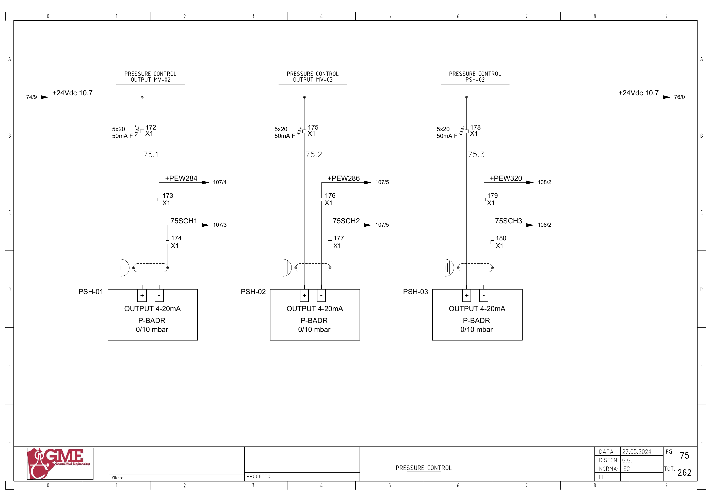
원본 도면 FG107 · PDF108
원본 PDF 열기PSH02 · 입력부터 사용값까지
| 구간 | 원본·관찰 대상 |
|---|---|
| 백업 심볼 | {"원본 심볼": "psh02", "백업 주소": "%iw286", "자료형": "int", "설명": "pressure control output mv-03", "색인 세그먼트": "_7ev", "문서 ID": "1539"} |
| 센서/전원/단자 경로 | +24Vdc → X1:175(50mA F) → PSH02:+; PSH02:- → X1:176 → +PEW286; X1:177 / 75SCH2 |
| 모듈 도면 표기 | CPU515 / MOD3 / PEW286: I7+34, U7-/I7-36 0/10 mbar |
| 환산 호출 | 원본 1746 / Part 456 CRefRID 351 / CodeBlock 468 RID 5 호출 앞 en 조건: (ON) IN0 값 핀: ON |
| 각 호출의 값 핀 | IN0 ← ON Analog_input ← PSH02 Coeff ← Coeff.COEFF_PSH02 Zero ← Coeff.ZERO_PSH02 OutValue ← Data.PSH_02 Out_of_range ← Allarm.PSH02_OFR |
호출 앞 접점·원본 핀배선
| Gate/핀·값 | 원본 식별 |
|---|---|
| Contact/operand / ON | Part 475 / Wire 469 / ORef 462 / RID 1 |
| CRef/IN0 / ON | Part 456 / Wire 470 / ORef 463 / RID 1 |
| CRef/Analog_input / PSH02 | Part 456 / Wire 471 / ORef 464 / RID 101 |
| CRef/Coeff / Coeff.COEFF_PSH02 | Part 456 / Wire 472 / ORef 465 / RID 102 |
| CRef/Zero / Coeff.ZERO_PSH02 | Part 456 / Wire 473 / ORef 466 / RID 103 |
| CRef/OutValue / Data.PSH_02 | Part 456 / Wire 474 / ORef 467 / RID 104 |
| CRef/Out_of_range / Allarm.PSH02_OFR | Part 456 / Wire 24 / ORef 23 / RID 387 |
증상별 관찰·배제·다음 확인
| 증상 | 확인할 구간 | 결과에 따른 다음 확인·근거 |
|---|---|---|
| 값이0·고정이거나 물리 상태와 다름 | %iw286 원시값과 Data.PSH_02을 같은 시각에 기록. +24Vdc → X1:175(50mA F) → PSH02:+; PSH02:- → X1:176 → +PEW286; X1:177 / 75SCH2 | 원시값도 고정이면 센서·전원·변환기·단자·모듈진단을 구간별로 대조합니다. 원시값이 변하면 IN0/en·각Coeff/Zero·환산·쓰기 위치를 대조합니다. 실제 허가와 모듈 설정은 확인 전입니다. 원본 1746 / Part 456 |
| 변환값이 범위를 벗어나거나 갑자기 변함 | Allarm.PSH02_OFR·원시값·환산 직후 값·후속값을 분리합니다. 도면 참고 범위: 0/10 mbar | OFR·범위 이상 -9999와 허가 해제0의 근거를 확인합니다. 계수·영점·현재 단위·정수 자료형·ENO·호출 순서를 대조합니다. 값을 임의로 보정하지 않습니다. 원본 환산·범위 이상 |
| HMI 표시와 PLC값이 맞지 않음 | 참고 OutValue Data.PSH_02와 기존 HMI 설정 주소를 비교합니다. 서로 다른 값의 출처·시각·자료형·단위를 기록합니다. | 다른 원본 쓰기가 0곳 있습니다. 아래 정확한 쓰기 목록과 현재 호출을 대조합니다. HMI 설정 행이 없어도 임의 주소를 배정하지 않습니다. |
| 알람이 반복되거나 리셋 뒤 응답이 다름 | 아래 읽기 위치에서 실제 사용 변수·비교값·기억·운전 허가와 최초 알람을 확인합니다. Data.PSH_02만으로 원인을 확정하지 않습니다. | 센서 원인 해소·알람 래치·Reset 접점·재기동 허가·최종 출력·물리 응답을 각각 기록합니다. OFR 읽기가 없음을 미사용으로 해석하지 않습니다. 관련 공정 정지·복구 근거 |
원시 입력의 Inputs 복사
| 복사·정적 조건 | 값·근거 |
|---|---|
| Inputs.PSH_02 True | PSH02 원본 1071 / Part 97 |
환산값의 전체 정확한 Global 쓰기·읽기
| 방향·블록 | 핀·정확한 근거 | 현재 확인 |
|---|---|---|
| read / valve control loop | 원본 1709 / Part 598 Sub/in2 / Wire 652 / ORef 632 | 현재 실행·값·설정 확인 전 |
| write / analog input conversion | 원본 1746 / Part 456 CRef/OutValue / Wire 474 / ORef 467 | 현재 실행·값·설정 확인 전 |
| read / allarms 3 | 원본 1989 / Part 908 Ge/in1 / Wire 956 / ORef 941 | 현재 실행·값·설정 확인 전 |
| read / allarms 3 | 원본 1989 / Part 932 Lt/in1 / Wire 969 / ORef 951 | 현재 실행·값·설정 확인 전 |
읽는 비교·연산의 값 출처·자료형·원본 핀
| 읽기 위치·원본 형식 | 접점·비교·값 연결 | ||||||||||||||
|---|---|---|---|---|---|---|---|---|---|---|---|---|---|---|---|
| 원본 1709 / Part 598 [{"attributes": {"Name": "SrcType", "Type": "Type"}, "value": "Int"}] |
| ||||||||||||||
| 원본 1989 / Part 908 [{"attributes": {"Name": "SrcType", "Type": "Type"}, "value": "Int"}] |
| ||||||||||||||
| 원본 1989 / Part 932 [{"attributes": {"Name": "SrcType", "Type": "Type"}, "value": "Int"}] |
|
범위 이상 OFR의 정확한 Global 참조
| 방향·블록 | 핀·정확한 근거 | 현재 확인 |
|---|---|---|
| write / analog input conversion | 원본 1746 / Part 456 CRef/Out_of_range / Wire 24 / ORef 23 | 현재 실행·값·설정 확인 전 |
색인에 읽기가 없더라도 HMI/외부 경보·미복원 자료·현재 프로그램의 사용 여부를 확정하지 않습니다.
기존 HMI 설정 참고
| 태그 | 설정 주소 | Access Name |
|---|---|---|
| Editor_PSH02 | DB26,INT18 | PLC |
| I_PSH_02 | DB13,INT50 | PLC |
같은 이름의 HMI 설정과 OutValue 사이의 현재 DB멤버·주소·표시환산 연결은 확인 전입니다.
원본 도면 FG75 · PDF76
원본 PDF 열기원본 도면 FG107 · PDF108
원본 PDF 열기PSH03 · 입력부터 사용값까지
| 구간 | 원본·관찰 대상 |
|---|---|
| 백업 심볼 | {"원본 심볼": "psh03", "백업 주소": "%iw320", "자료형": "int", "설명": "pressure control", "색인 세그먼트": "_7ev", "문서 ID": "1538"} |
| 센서/전원/단자 경로 | +24Vdc → X1:178(50mA F) → PSH03:+; PSH03:- → X1:179 → +PEW320; X1:180 / 75SCH3 |
| 모듈 도면 표기 | CPU515 / MOD4 / PEW320: I0+2, U0-/I0-4 0/10 mbar / 원본 제목PRESSURE CONTROL PSH-02 보존 |
| 환산 호출 | 원본 1747 / Part 476 CRefRID 351 / CodeBlock 488 RID 5 호출 앞 en 조건: (ON) IN0 값 핀: ON |
| 각 호출의 값 핀 | IN0 ← ON Analog_input ← PSH03 Coeff ← Coeff.Coeff_PSH03 Zero ← Coeff.Zero_PSH03 OutValue ← Data.PSH03 Out_of_range ← Allarm.PSH03_OFR |
호출 앞 접점·원본 핀배선
| Gate/핀·값 | 원본 식별 |
|---|---|
| Contact/operand / ON | Part 495 / Wire 489 / ORef 482 / RID 1 |
| CRef/IN0 / ON | Part 476 / Wire 490 / ORef 483 / RID 1 |
| CRef/Analog_input / PSH03 | Part 476 / Wire 491 / ORef 484 / RID 106 |
| CRef/Coeff / Coeff.Coeff_PSH03 | Part 476 / Wire 492 / ORef 485 / RID 449 |
| CRef/Zero / Coeff.Zero_PSH03 | Part 476 / Wire 493 / ORef 486 / RID 448 |
| CRef/OutValue / Data.PSH03 | Part 476 / Wire 494 / ORef 487 / RID 109 |
| CRef/Out_of_range / Allarm.PSH03_OFR | Part 476 / Wire 24 / ORef 23 / RID 389 |
증상별 관찰·배제·다음 확인
| 증상 | 확인할 구간 | 결과에 따른 다음 확인·근거 |
|---|---|---|
| 값이0·고정이거나 물리 상태와 다름 | %iw320 원시값과 Data.PSH03을 같은 시각에 기록. +24Vdc → X1:178(50mA F) → PSH03:+; PSH03:- → X1:179 → +PEW320; X1:180 / 75SCH3 | 원시값도 고정이면 센서·전원·변환기·단자·모듈진단을 구간별로 대조합니다. 원시값이 변하면 IN0/en·각Coeff/Zero·환산·쓰기 위치를 대조합니다. 실제 허가와 모듈 설정은 확인 전입니다. 원본 1747 / Part 476 |
| 변환값이 범위를 벗어나거나 갑자기 변함 | Allarm.PSH03_OFR·원시값·환산 직후 값·후속값을 분리합니다. 도면 참고 범위: 0/10 mbar / 원본 제목PRESSURE CONTROL PSH-02 보존 | OFR·범위 이상 -9999와 허가 해제0의 근거를 확인합니다. 계수·영점·현재 단위·정수 자료형·ENO·호출 순서를 대조합니다. 값을 임의로 보정하지 않습니다. 원본 환산·범위 이상 |
| HMI 표시와 PLC값이 맞지 않음 | 참고 OutValue Data.PSH03와 기존 HMI 설정 주소를 비교합니다. 서로 다른 값의 출처·시각·자료형·단위를 기록합니다. | 다른 원본 쓰기가 0곳 있습니다. 아래 정확한 쓰기 목록과 현재 호출을 대조합니다. HMI 설정 행이 없어도 임의 주소를 배정하지 않습니다. |
| 알람이 반복되거나 리셋 뒤 응답이 다름 | 아래 읽기 위치에서 실제 사용 변수·비교값·기억·운전 허가와 최초 알람을 확인합니다. Data.PSH03만으로 원인을 확정하지 않습니다. | 센서 원인 해소·알람 래치·Reset 접점·재기동 허가·최종 출력·물리 응답을 각각 기록합니다. OFR 읽기가 없음을 미사용으로 해석하지 않습니다. 관련 공정 정지·복구 근거 |
원시 입력의 Inputs 복사
| 복사·정적 조건 | 값·근거 |
|---|---|
| Inputs.PSH_03 True | PSH03 원본 1071 / Part 98 |
환산값의 전체 정확한 Global 쓰기·읽기
| 방향·블록 | 핀·정확한 근거 | 현재 확인 |
|---|---|---|
| read / valve control loop | 원본 1705 / Part 256 Sub/in2 / Wire 305 / ORef 288 | 현재 실행·값·설정 확인 전 |
| write / analog input conversion | 원본 1747 / Part 476 CRef/OutValue / Wire 494 / ORef 487 | 현재 실행·값·설정 확인 전 |
읽는 비교·연산의 값 출처·자료형·원본 핀
| 읽기 위치·원본 형식 | 접점·비교·값 연결 | ||||||||||
|---|---|---|---|---|---|---|---|---|---|---|---|
| 원본 1705 / Part 256 [{"attributes": {"Name": "SrcType", "Type": "Type"}, "value": "Int"}] |
|
범위 이상 OFR의 정확한 Global 참조
| 방향·블록 | 핀·정확한 근거 | 현재 확인 |
|---|---|---|
| write / analog input conversion | 원본 1747 / Part 476 CRef/Out_of_range / Wire 24 / ORef 23 | 현재 실행·값·설정 확인 전 |
색인에 읽기가 없더라도 HMI/외부 경보·미복원 자료·현재 프로그램의 사용 여부를 확정하지 않습니다.
기존 HMI 설정 참고
| 태그 | 설정 주소 | Access Name |
|---|---|---|
| I_PSH_03 | DB13,INT52 | PLC |
같은 이름의 HMI 설정과 OutValue 사이의 현재 DB멤버·주소·표시환산 연결은 확인 전입니다.
원본 도면 FG75 · PDF76
원본 PDF 열기원본 도면 FG108 · PDF109
원본 PDF 열기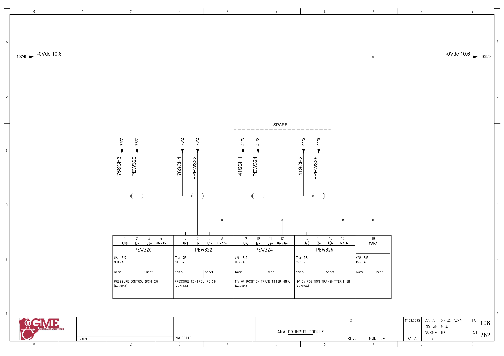
PC01 · 입력부터 사용값까지
| 구간 | 원본·관찰 대상 |
|---|---|
| 백업 심볼 | {"원본 심볼": "pc01", "백업 주소": "%iw322", "자료형": "int", "설명": "pressure control", "색인 세그먼트": "_7ev", "문서 ID": "1521"} |
| 센서/전원/단자 경로 | +24Vdc → X1:181(50mA F) → PC01:+; PC01:- → X1:182 → +PEW322; X1:183 / 76SCH1. 같은 도면의 PSL05는 별도 접점 |
| 모듈 도면 표기 | CPU515 / MOD4 / PEW322: I1+6, U1-/I1-8 -/+200 mbar |
| 환산 호출 | 원본 1775 / Part 1576 CRefRID 351 / CodeBlock 1588 RID 5 호출 앞 en 조건: (ON) IN0 값 핀: ON |
| 각 호출의 값 핀 | IN0 ← ON Analog_input ← PC01 Coeff ← Coeff.COEFF_PC01 Zero ← Coeff.ZERO_PC01 OutValue ← Data.PC_01 Out_of_range ← Allarm.PC01_OFR |
호출 앞 접점·원본 핀배선
| Gate/핀·값 | 원본 식별 |
|---|---|
| Contact/operand / ON | Part 1595 / Wire 1589 / ORef 1582 / RID 1 |
| CRef/IN0 / ON | Part 1576 / Wire 1590 / ORef 1583 / RID 1 |
| CRef/Analog_input / PC01 | Part 1576 / Wire 1591 / ORef 1584 / RID 305 |
| CRef/Coeff / Coeff.COEFF_PC01 | Part 1576 / Wire 1592 / ORef 1585 / RID 306 |
| CRef/Zero / Coeff.ZERO_PC01 | Part 1576 / Wire 1593 / ORef 1586 / RID 307 |
| CRef/OutValue / Data.PC_01 | Part 1576 / Wire 1594 / ORef 1587 / RID 308 |
| CRef/Out_of_range / Allarm.PC01_OFR | Part 1576 / Wire 24 / ORef 23 / RID 428 |
증상별 관찰·배제·다음 확인
| 증상 | 확인할 구간 | 결과에 따른 다음 확인·근거 |
|---|---|---|
| 값이0·고정이거나 물리 상태와 다름 | %iw322 원시값과 Data.PC_01을 같은 시각에 기록. +24Vdc → X1:181(50mA F) → PC01:+; PC01:- → X1:182 → +PEW322; X1:183 / 76SCH1. 같은 도면의 PSL05는 별도 접점 | 원시값도 고정이면 센서·전원·변환기·단자·모듈진단을 구간별로 대조합니다. 원시값이 변하면 IN0/en·각Coeff/Zero·환산·쓰기 위치를 대조합니다. 실제 허가와 모듈 설정은 확인 전입니다. 원본 1775 / Part 1576 |
| 변환값이 범위를 벗어나거나 갑자기 변함 | Allarm.PC01_OFR·원시값·환산 직후 값·후속값을 분리합니다. 도면 참고 범위: -/+200 mbar | OFR·범위 이상 -9999와 허가 해제0의 근거를 확인합니다. 계수·영점·현재 단위·정수 자료형·ENO·호출 순서를 대조합니다. 값을 임의로 보정하지 않습니다. 원본 환산·범위 이상 |
| HMI 표시와 PLC값이 맞지 않음 | 참고 OutValue Data.PC_01와 기존 HMI 설정 주소를 비교합니다. 서로 다른 값의 출처·시각·자료형·단위를 기록합니다. | 다른 원본 쓰기가 0곳 있습니다. 아래 정확한 쓰기 목록과 현재 호출을 대조합니다. HMI 설정 행이 없어도 임의 주소를 배정하지 않습니다. |
| 알람이 반복되거나 리셋 뒤 응답이 다름 | 아래 읽기 위치에서 실제 사용 변수·비교값·기억·운전 허가와 최초 알람을 확인합니다. Data.PC_01만으로 원인을 확정하지 않습니다. | 센서 원인 해소·알람 래치·Reset 접점·재기동 허가·최종 출력·물리 응답을 각각 기록합니다. OFR 읽기가 없음을 미사용으로 해석하지 않습니다. 관련 공정 정지·복구 근거 |
원시 입력의 Inputs 복사
| 복사·정적 조건 | 값·근거 |
|---|---|
| Inputs.PC_01 True | PC01 원본 1071 / Part 99 |
환산값의 전체 정확한 Global 쓰기·읽기
| 방향·블록 | 핀·정확한 근거 | 현재 확인 |
|---|---|---|
| write / analog input conversion | 원본 1775 / Part 1576 CRef/OutValue / Wire 1594 / ORef 1587 | 현재 실행·값·설정 확인 전 |
| read / filter | 원본 1901 / Part 1935 Sub/in1 / Wire 1995 / ORef 1973 | 현재 실행·값·설정 확인 전 |
| read / allarms 3 | 원본 1987 / Part 797 Gt/in1 / Wire 835 / ORef 821 | 현재 실행·값·설정 확인 전 |
| read / allarms 3 | 원본 1987 / Part 800 Gt/in1 / Wire 838 / ORef 823 | 현재 실행·값·설정 확인 전 |
| read / allarms 3 | 원본 1987 / Part 803 Lt/in1 / Wire 841 / ORef 825 | 현재 실행·값·설정 확인 전 |
읽는 비교·연산의 값 출처·자료형·원본 핀
| 읽기 위치·원본 형식 | 접점·비교·값 연결 | ||||||||||||
|---|---|---|---|---|---|---|---|---|---|---|---|---|---|
| 원본 1901 / Part 1935 [{"attributes": {"Name": "SrcType", "Type": "Type"}, "value": "Int"}] |
| ||||||||||||
| 원본 1987 / Part 797 [{"attributes": {"Name": "SrcType", "Type": "Type"}, "value": "Int"}] |
| ||||||||||||
| 원본 1987 / Part 800 [{"attributes": {"Name": "SrcType", "Type": "Type"}, "value": "Int"}] |
| ||||||||||||
| 원본 1987 / Part 803 [{"attributes": {"Name": "SrcType", "Type": "Type"}, "value": "Int"}] |
|
범위 이상 OFR의 정확한 Global 참조
| 방향·블록 | 핀·정확한 근거 | 현재 확인 |
|---|---|---|
| write / analog input conversion | 원본 1775 / Part 1576 CRef/Out_of_range / Wire 24 / ORef 23 | 현재 실행·값·설정 확인 전 |
색인에 읽기가 없더라도 HMI/외부 경보·미복원 자료·현재 프로그램의 사용 여부를 확정하지 않습니다.
기존 HMI 설정 참고
| 태그 | 설정 주소 | Access Name |
|---|---|---|
| I_PC_01 | DB13,INT54 | PLC |
같은 이름의 HMI 설정과 OutValue 사이의 현재 DB멤버·주소·표시환산 연결은 확인 전입니다.
원본 도면 FG76 · PDF77
원본 PDF 열기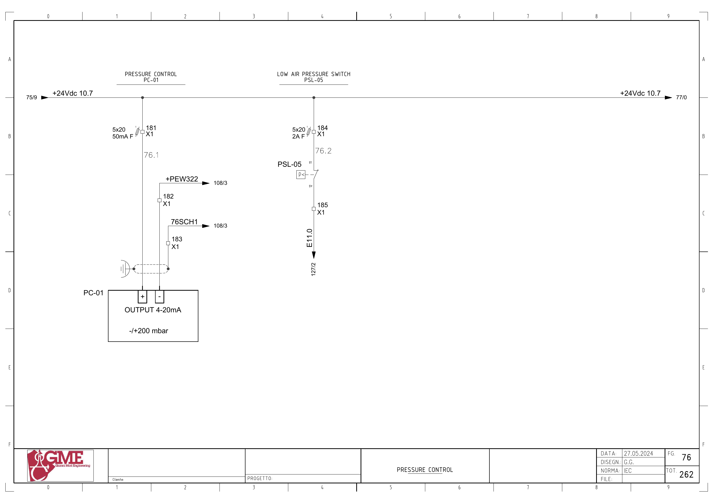
원본 도면 FG108 · PDF109
원본 PDF 열기DP01 · 입력부터 사용값까지
| 구간 | 원본·관찰 대상 |
|---|---|
| 백업 심볼 | {"원본 심볼": "pr_bf01", "백업 주소": "%iw398", "자료형": "int", "설명": "differential pressure switchbags filter bf-01(4-20ma)", "색인 세그먼트": "_7ev", "문서 ID": "1523"} |
| 센서/전원/단자 경로 | 110Vac → X3:90(2A F)/91 → DP01 전원; DP01 출력+/- → X3:92/93 → +PEW398/-PEW398; X3:94 / 169SCH1 |
| 모듈 도면 표기 | CPU515 / MOD2 / PEW398: I6+30, U6-/I6-32 0/50 mbar |
| 환산 호출 | 원본 1773 / Part 1536 CRefRID 351 / CodeBlock 1548 RID 5 호출 앞 en 조건: (ON) IN0 값 핀: ON |
| 각 호출의 값 핀 | IN0 ← ON Analog_input ← PR_BF01 Coeff ← Coeff.COEFF_DP01 Zero ← Coeff.ZERO_DP01 OutValue ← Data.DP_01 Out_of_range ← Allarm.BF01_OFR |
호출 앞 접점·원본 핀배선
| Gate/핀·값 | 원본 식별 |
|---|---|
| Contact/operand / ON | Part 1555 / Wire 1549 / ORef 1542 / RID 1 |
| CRef/IN0 / ON | Part 1536 / Wire 1550 / ORef 1543 / RID 1 |
| CRef/Analog_input / PR_BF01 | Part 1536 / Wire 1551 / ORef 1544 / RID 295 |
| CRef/Coeff / Coeff.COEFF_DP01 | Part 1536 / Wire 1552 / ORef 1545 / RID 451 |
| CRef/Zero / Coeff.ZERO_DP01 | Part 1536 / Wire 1553 / ORef 1546 / RID 297 |
| CRef/OutValue / Data.DP_01 | Part 1536 / Wire 1554 / ORef 1547 / RID 298 |
| CRef/Out_of_range / Allarm.BF01_OFR | Part 1536 / Wire 24 / ORef 23 / RID 426 |
증상별 관찰·배제·다음 확인
| 증상 | 확인할 구간 | 결과에 따른 다음 확인·근거 |
|---|---|---|
| 값이0·고정이거나 물리 상태와 다름 | %iw398 원시값과 Data.DP_01을 같은 시각에 기록. 110Vac → X3:90(2A F)/91 → DP01 전원; DP01 출력+/- → X3:92/93 → +PEW398/-PEW398; X3:94 / 169SCH1 | 원시값도 고정이면 센서·전원·변환기·단자·모듈진단을 구간별로 대조합니다. 원시값이 변하면 IN0/en·각Coeff/Zero·환산·쓰기 위치를 대조합니다. 실제 허가와 모듈 설정은 확인 전입니다. 원본 1773 / Part 1536 |
| 변환값이 범위를 벗어나거나 갑자기 변함 | Allarm.BF01_OFR·원시값·환산 직후 값·후속값을 분리합니다. 도면 참고 범위: 0/50 mbar | OFR·범위 이상 -9999와 허가 해제0의 근거를 확인합니다. 계수·영점·현재 단위·정수 자료형·ENO·호출 순서를 대조합니다. 값을 임의로 보정하지 않습니다. 원본 환산·범위 이상 |
| HMI 표시와 PLC값이 맞지 않음 | 참고 OutValue Data.DP_01와 기존 HMI 설정 주소를 비교합니다. 서로 다른 값의 출처·시각·자료형·단위를 기록합니다. | 다른 원본 쓰기가 0곳 있습니다. 아래 정확한 쓰기 목록과 현재 호출을 대조합니다. HMI 설정 행이 없어도 임의 주소를 배정하지 않습니다. |
| 알람이 반복되거나 리셋 뒤 응답이 다름 | 아래 읽기 위치에서 실제 사용 변수·비교값·기억·운전 허가와 최초 알람을 확인합니다. Data.DP_01만으로 원인을 확정하지 않습니다. | 센서 원인 해소·알람 래치·Reset 접점·재기동 허가·최종 출력·물리 응답을 각각 기록합니다. OFR 읽기가 없음을 미사용으로 해석하지 않습니다. 관련 공정 정지·복구 근거 |
원시 입력의 Inputs 복사
원본1071에서 이 심볼의 Inputs 복사는 확인하지 못했습니다. 다른 블록/현재 전달은 별도 확인합니다.
환산값의 전체 정확한 Global 쓰기·읽기
| 방향·블록 | 핀·정확한 근거 | 현재 확인 |
|---|---|---|
| write / analog input conversion | 원본 1773 / Part 1536 CRef/OutValue / Wire 1554 / ORef 1547 | 현재 실행·값·설정 확인 전 |
| read / filter | 원본 1883 / Part 213 Lt/in1 / Wire 322 / ORef 282 | 현재 실행·값·설정 확인 전 |
| read / filter | 원본 1883 / Part 225 Ge/in1 / Wire 331 / ORef 288 | 현재 실행·값·설정 확인 전 |
| read / filter | 원본 1883 / Part 228 Lt/in1 / Wire 334 / ORef 290 | 현재 실행·값·설정 확인 전 |
| read / filter | 원본 1883 / Part 240 Ge/in1 / Wire 343 / ORef 296 | 현재 실행·값·설정 확인 전 |
| read / filter | 원본 1883 / Part 243 Lt/in1 / Wire 346 / ORef 298 | 현재 실행·값·설정 확인 전 |
| read / filter | 원본 1883 / Part 255 Ge/in1 / Wire 355 / ORef 304 | 현재 실행·값·설정 확인 전 |
| read / filter | 원본 1883 / Part 258 Lt/in1 / Wire 358 / ORef 306 | 현재 실행·값·설정 확인 전 |
| read / filter | 원본 1883 / Part 270 Ge/in1 / Wire 367 / ORef 312 | 현재 실행·값·설정 확인 전 |
| read / filter | 원본 1886 / Part 24 Le/in1 / Wire 54 / ORef 37 | 현재 실행·값·설정 확인 전 |
| read / allarms 3 | 원본 1992 / Part 1121 Gt/in1 / Wire 1174 / ORef 1154 | 현재 실행·값·설정 확인 전 |
| read / allarms 3 | 원본 1992 / Part 1127 Lt/in1 / Wire 1180 / ORef 1158 | 현재 실행·값·설정 확인 전 |
| read / allarms 3 | 원본 1992 / Part 1146 Lt/in1 / Wire 1195 / ORef 1168 | 현재 실행·값·설정 확인 전 |
읽는 비교·연산의 값 출처·자료형·원본 핀
| 읽기 위치·원본 형식 | 접점·비교·값 연결 | ||||||||||||||||
|---|---|---|---|---|---|---|---|---|---|---|---|---|---|---|---|---|---|
| 원본 1883 / Part 213 [{"attributes": {"Name": "SrcType", "Type": "Type"}, "value": "Int"}] |
| ||||||||||||||||
| 원본 1883 / Part 225 [{"attributes": {"Name": "SrcType", "Type": "Type"}, "value": "Int"}] |
| ||||||||||||||||
| 원본 1883 / Part 228 [{"attributes": {"Name": "SrcType", "Type": "Type"}, "value": "Int"}] |
| ||||||||||||||||
| 원본 1883 / Part 240 [{"attributes": {"Name": "SrcType", "Type": "Type"}, "value": "Int"}] |
| ||||||||||||||||
| 원본 1883 / Part 243 [{"attributes": {"Name": "SrcType", "Type": "Type"}, "value": "Int"}] |
| ||||||||||||||||
| 원본 1883 / Part 255 [{"attributes": {"Name": "SrcType", "Type": "Type"}, "value": "Int"}] |
| ||||||||||||||||
| 원본 1883 / Part 258 [{"attributes": {"Name": "SrcType", "Type": "Type"}, "value": "Int"}] |
| ||||||||||||||||
| 원본 1883 / Part 270 [{"attributes": {"Name": "SrcType", "Type": "Type"}, "value": "Int"}] |
| ||||||||||||||||
| 원본 1886 / Part 24 [{"attributes": {"Name": "SrcType", "Type": "Type"}, "value": "Int"}] |
| ||||||||||||||||
| 원본 1992 / Part 1121 [{"attributes": {"Name": "SrcType", "Type": "Type"}, "value": "Int"}] |
| ||||||||||||||||
| 원본 1992 / Part 1127 [{"attributes": {"Name": "SrcType", "Type": "Type"}, "value": "Int"}] |
| ||||||||||||||||
| 원본 1992 / Part 1146 [{"attributes": {"Name": "SrcType", "Type": "Type"}, "value": "Int"}] |
|
범위 이상 OFR의 정확한 Global 참조
| 방향·블록 | 핀·정확한 근거 | 현재 확인 |
|---|---|---|
| write / analog input conversion | 원본 1773 / Part 1536 CRef/Out_of_range / Wire 24 / ORef 23 | 현재 실행·값·설정 확인 전 |
색인에 읽기가 없더라도 HMI/외부 경보·미복원 자료·현재 프로그램의 사용 여부를 확정하지 않습니다.
기존 HMI 설정 참고
기존 설비별 HMI 분류에서 이 ID의 행을 확인하지 못했습니다. HMI가 없다는 뜻은 아니며 다른 이름·현재 주소는 추가 확인합니다.
같은 이름의 HMI 설정과 OutValue 사이의 현재 DB멤버·주소·표시환산 연결은 확인 전입니다.
원본 도면 FG169 · PDF170
원본 PDF 열기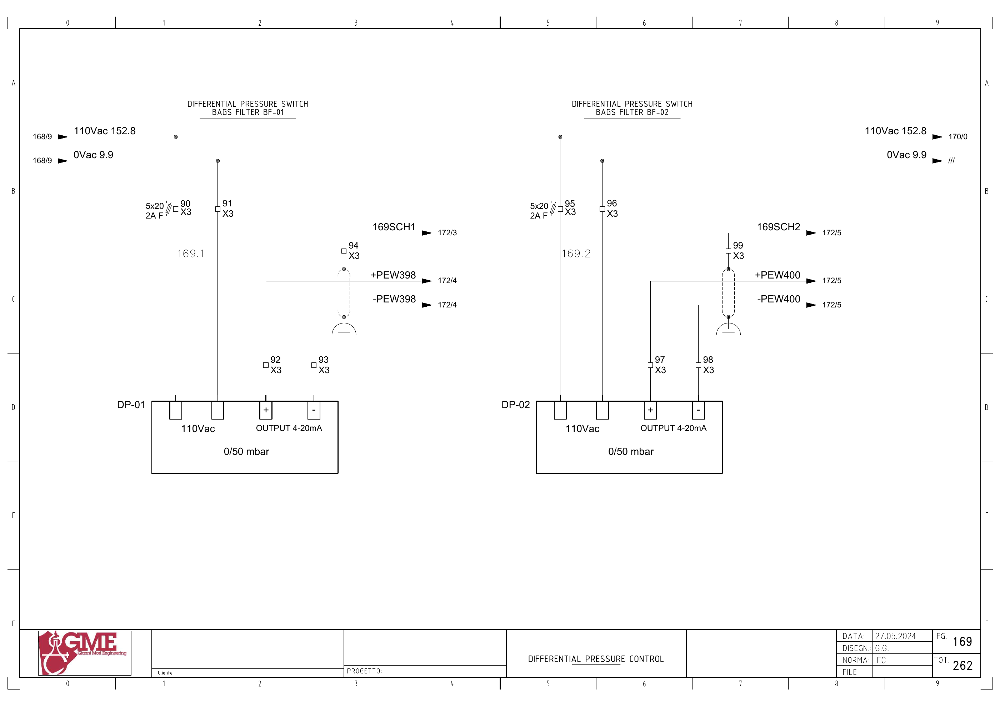
원본 도면 FG172 · PDF173
원본 PDF 열기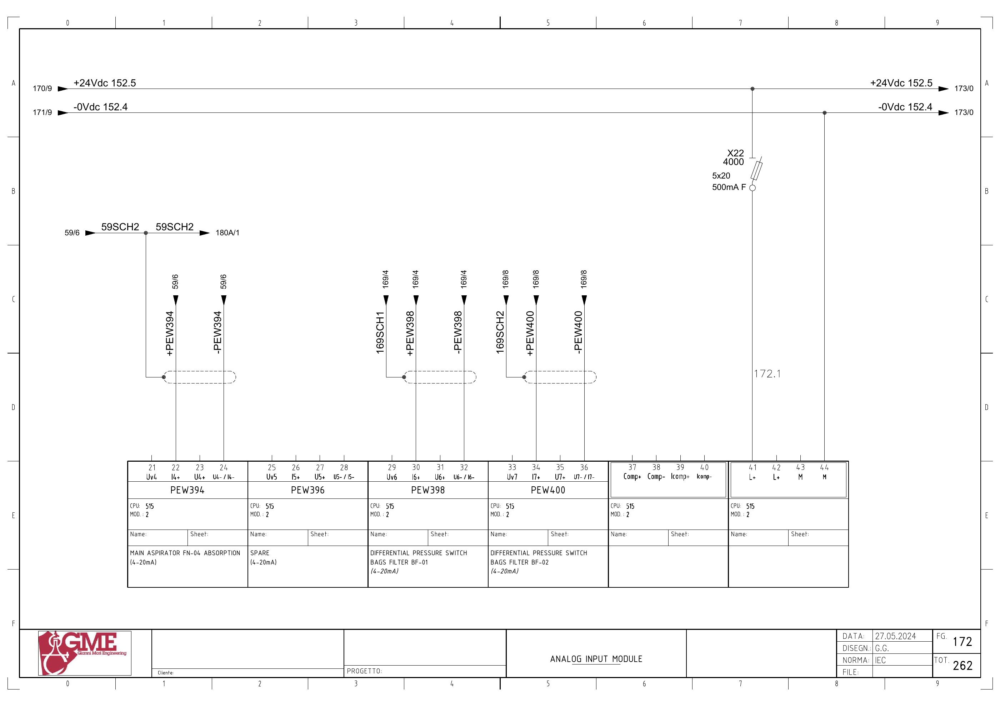
DP02 · 입력부터 사용값까지
| 구간 | 원본·관찰 대상 |
|---|---|
| 백업 심볼 | {"원본 심볼": "pr_br02", "백업 주소": "%iw400", "자료형": "int", "설명": "differential pressure switchbags filter bf-02(4-20ma)", "색인 세그먼트": "_7ev", "문서 ID": "1522"} |
| 센서/전원/단자 경로 | 110Vac → X3:95(2A F)/96 → DP02 전원; DP02 출력+/- → X3:97/98 → +PEW400/-PEW400; X3:99 / 169SCH2 |
| 모듈 도면 표기 | CPU515 / MOD2 / PEW400: I7+34, U7-/I7-36 0/50 mbar |
| 환산 호출 | 원본 1774 / Part 1556 CRefRID 351 / CodeBlock 1568 RID 5 호출 앞 en 조건: (ON) IN0 값 핀: ON |
| 각 호출의 값 핀 | IN0 ← ON Analog_input ← PR_BR02 Coeff ← Coeff.COEFF_DP02 Zero ← Coeff.ZERO_DP02 OutValue ← Data.DP_02 Out_of_range ← Allarm.BF02_OFR |
호출 앞 접점·원본 핀배선
| Gate/핀·값 | 원본 식별 |
|---|---|
| Contact/operand / ON | Part 1575 / Wire 1569 / ORef 1562 / RID 1 |
| CRef/IN0 / ON | Part 1556 / Wire 1570 / ORef 1563 / RID 1 |
| CRef/Analog_input / PR_BR02 | Part 1556 / Wire 1571 / ORef 1564 / RID 300 |
| CRef/Coeff / Coeff.COEFF_DP02 | Part 1556 / Wire 1572 / ORef 1565 / RID 301 |
| CRef/Zero / Coeff.ZERO_DP02 | Part 1556 / Wire 1573 / ORef 1566 / RID 302 |
| CRef/OutValue / Data.DP_02 | Part 1556 / Wire 1574 / ORef 1567 / RID 303 |
| CRef/Out_of_range / Allarm.BF02_OFR | Part 1556 / Wire 24 / ORef 23 / RID 430 |
증상별 관찰·배제·다음 확인
| 증상 | 확인할 구간 | 결과에 따른 다음 확인·근거 |
|---|---|---|
| 값이0·고정이거나 물리 상태와 다름 | %iw400 원시값과 Data.DP_02을 같은 시각에 기록. 110Vac → X3:95(2A F)/96 → DP02 전원; DP02 출력+/- → X3:97/98 → +PEW400/-PEW400; X3:99 / 169SCH2 | 원시값도 고정이면 센서·전원·변환기·단자·모듈진단을 구간별로 대조합니다. 원시값이 변하면 IN0/en·각Coeff/Zero·환산·쓰기 위치를 대조합니다. 실제 허가와 모듈 설정은 확인 전입니다. 원본 1774 / Part 1556 |
| 변환값이 범위를 벗어나거나 갑자기 변함 | Allarm.BF02_OFR·원시값·환산 직후 값·후속값을 분리합니다. 도면 참고 범위: 0/50 mbar | OFR·범위 이상 -9999와 허가 해제0의 근거를 확인합니다. 계수·영점·현재 단위·정수 자료형·ENO·호출 순서를 대조합니다. 값을 임의로 보정하지 않습니다. 원본 환산·범위 이상 |
| HMI 표시와 PLC값이 맞지 않음 | 참고 OutValue Data.DP_02와 기존 HMI 설정 주소를 비교합니다. 서로 다른 값의 출처·시각·자료형·단위를 기록합니다. | 다른 원본 쓰기가 0곳 있습니다. 아래 정확한 쓰기 목록과 현재 호출을 대조합니다. HMI 설정 행이 없어도 임의 주소를 배정하지 않습니다. |
| 알람이 반복되거나 리셋 뒤 응답이 다름 | 아래 읽기 위치에서 실제 사용 변수·비교값·기억·운전 허가와 최초 알람을 확인합니다. Data.DP_02만으로 원인을 확정하지 않습니다. | 센서 원인 해소·알람 래치·Reset 접점·재기동 허가·최종 출력·물리 응답을 각각 기록합니다. OFR 읽기가 없음을 미사용으로 해석하지 않습니다. 관련 공정 정지·복구 근거 |
원시 입력의 Inputs 복사
원본1071에서 이 심볼의 Inputs 복사는 확인하지 못했습니다. 다른 블록/현재 전달은 별도 확인합니다.
환산값의 전체 정확한 Global 쓰기·읽기
| 방향·블록 | 핀·정확한 근거 | 현재 확인 |
|---|---|---|
| write / analog input conversion | 원본 1774 / Part 1556 CRef/OutValue / Wire 1574 / ORef 1567 | 현재 실행·값·설정 확인 전 |
| read / filter | 원본 1884 / Part 395 Lt/in1 / Wire 504 / ORef 464 | 현재 실행·값·설정 확인 전 |
| read / filter | 원본 1884 / Part 407 Ge/in1 / Wire 513 / ORef 470 | 현재 실행·값·설정 확인 전 |
| read / filter | 원본 1884 / Part 410 Lt/in1 / Wire 516 / ORef 472 | 현재 실행·값·설정 확인 전 |
| read / filter | 원본 1884 / Part 422 Ge/in1 / Wire 525 / ORef 478 | 현재 실행·값·설정 확인 전 |
| read / filter | 원본 1884 / Part 425 Lt/in1 / Wire 528 / ORef 480 | 현재 실행·값·설정 확인 전 |
| read / filter | 원본 1884 / Part 437 Ge/in1 / Wire 537 / ORef 486 | 현재 실행·값·설정 확인 전 |
| read / filter | 원본 1884 / Part 440 Lt/in1 / Wire 540 / ORef 488 | 현재 실행·값·설정 확인 전 |
| read / filter | 원본 1884 / Part 452 Ge/in1 / Wire 549 / ORef 494 | 현재 실행·값·설정 확인 전 |
| read / filter | 원본 1886 / Part 30 Le/in1 / Wire 65 / ORef 43 | 현재 실행·값·설정 확인 전 |
| read / allarms 3 | 원본 1992 / Part 1124 Gt/in1 / Wire 1177 / ORef 1156 | 현재 실행·값·설정 확인 전 |
| read / allarms 3 | 원본 1992 / Part 1130 Lt/in1 / Wire 1183 / ORef 1160 | 현재 실행·값·설정 확인 전 |
| read / allarms 3 | 원본 1992 / Part 1149 Lt/in1 / Wire 1198 / ORef 1170 | 현재 실행·값·설정 확인 전 |
읽는 비교·연산의 값 출처·자료형·원본 핀
| 읽기 위치·원본 형식 | 접점·비교·값 연결 | ||||||||||||||||
|---|---|---|---|---|---|---|---|---|---|---|---|---|---|---|---|---|---|
| 원본 1884 / Part 395 [{"attributes": {"Name": "SrcType", "Type": "Type"}, "value": "Int"}] |
| ||||||||||||||||
| 원본 1884 / Part 407 [{"attributes": {"Name": "SrcType", "Type": "Type"}, "value": "Int"}] |
| ||||||||||||||||
| 원본 1884 / Part 410 [{"attributes": {"Name": "SrcType", "Type": "Type"}, "value": "Int"}] |
| ||||||||||||||||
| 원본 1884 / Part 422 [{"attributes": {"Name": "SrcType", "Type": "Type"}, "value": "Int"}] |
| ||||||||||||||||
| 원본 1884 / Part 425 [{"attributes": {"Name": "SrcType", "Type": "Type"}, "value": "Int"}] |
| ||||||||||||||||
| 원본 1884 / Part 437 [{"attributes": {"Name": "SrcType", "Type": "Type"}, "value": "Int"}] |
| ||||||||||||||||
| 원본 1884 / Part 440 [{"attributes": {"Name": "SrcType", "Type": "Type"}, "value": "Int"}] |
| ||||||||||||||||
| 원본 1884 / Part 452 [{"attributes": {"Name": "SrcType", "Type": "Type"}, "value": "Int"}] |
| ||||||||||||||||
| 원본 1886 / Part 30 [{"attributes": {"Name": "SrcType", "Type": "Type"}, "value": "Int"}] |
| ||||||||||||||||
| 원본 1992 / Part 1124 [{"attributes": {"Name": "SrcType", "Type": "Type"}, "value": "Int"}] |
| ||||||||||||||||
| 원본 1992 / Part 1130 [{"attributes": {"Name": "SrcType", "Type": "Type"}, "value": "Int"}] |
| ||||||||||||||||
| 원본 1992 / Part 1149 [{"attributes": {"Name": "SrcType", "Type": "Type"}, "value": "Int"}] |
|
범위 이상 OFR의 정확한 Global 참조
| 방향·블록 | 핀·정확한 근거 | 현재 확인 |
|---|---|---|
| write / analog input conversion | 원본 1774 / Part 1556 CRef/Out_of_range / Wire 24 / ORef 23 | 현재 실행·값·설정 확인 전 |
색인에 읽기가 없더라도 HMI/외부 경보·미복원 자료·현재 프로그램의 사용 여부를 확정하지 않습니다.
기존 HMI 설정 참고
기존 설비별 HMI 분류에서 이 ID의 행을 확인하지 못했습니다. HMI가 없다는 뜻은 아니며 다른 이름·현재 주소는 추가 확인합니다.
같은 이름의 HMI 설정과 OutValue 사이의 현재 DB멤버·주소·표시환산 연결은 확인 전입니다.
원본 도면 FG169 · PDF170
원본 PDF 열기원본 도면 FG172 · PDF173
원본 PDF 열기RO01 · 입력부터 사용값까지
| 구간 | 원본·관찰 대상 |
|---|---|
| 백업 심볼 | {"원본 심볼": "r001", "백업 주소": "%iw352", "자료형": "int", "설명": "oxigen control", "색인 세그먼트": "_7ev", "문서 ID": "1537"} |
| 센서/전원/단자 경로 | RO01 소자+S/-S/-T/+T → 80RO01 H705:1+/2-/3-/4+; 110Vac X1:209(2A F)→15, 0Vac X1:210→16, GND17; 출력7+/8- → X1:211/212 → +PEW352/-PEW352; X1:213 / 80SCH1 |
| 모듈 도면 표기 | CPU515 / MOD5 / PEW352: I0+2, U0-/I0-4 4–20mA / 산소 표시 환산·단위 확인 전 |
| 환산 호출 | 원본 1748 / Part 496 CRefRID 351 / CodeBlock 508 RID 5 호출 앞 en 조건: (OFF) IN0 값 핀: ON |
| 각 호출의 값 핀 | IN0 ← ON Analog_input ← R001 Coeff ← Coeff.COEFF_R01 Zero ← Coeff.ZERO_R01 OutValue ← Data.Oxigen_RO01 Out_of_range ← Allarm.Ro01_OFR |
호출 앞 접점·원본 핀배선
| Gate/핀·값 | 원본 식별 |
|---|---|
| Contact/operand / OFF | Part 515 / Wire 509 / ORef 502 / RID 34 |
| CRef/IN0 / ON | Part 496 / Wire 510 / ORef 503 / RID 1 |
| CRef/Analog_input / R001 | Part 496 / Wire 511 / ORef 504 / RID 111 |
| CRef/Coeff / Coeff.COEFF_R01 | Part 496 / Wire 512 / ORef 505 / RID 112 |
| CRef/Zero / Coeff.ZERO_R01 | Part 496 / Wire 513 / ORef 506 / RID 113 |
| CRef/OutValue / Data.Oxigen_RO01 | Part 496 / Wire 514 / ORef 507 / RID 114 |
| CRef/Out_of_range / Allarm.Ro01_OFR | Part 496 / Wire 24 / ORef 23 / RID 393 |
증상별 관찰·배제·다음 확인
| 증상 | 확인할 구간 | 결과에 따른 다음 확인·근거 |
|---|---|---|
| 값이0·고정이거나 물리 상태와 다름 | %iw352 원시값과 Data.Oxigen_RO01을 같은 시각에 기록. RO01 소자+S/-S/-T/+T → 80RO01 H705:1+/2-/3-/4+; 110Vac X1:209(2A F)→15, 0Vac X1:210→16, GND17; 출력7+/8- → X1:211/212 → +PEW352/-PEW352; X1:213 / 80SCH1 | 원시값도 고정이면 센서·전원·변환기·단자·모듈진단을 구간별로 대조합니다. 원시값이 변하면 IN0/en·각Coeff/Zero·환산·쓰기 위치를 대조합니다. 실제 허가와 모듈 설정은 확인 전입니다. 원본 1748 / Part 496 |
| 변환값이 범위를 벗어나거나 갑자기 변함 | Allarm.Ro01_OFR·원시값·환산 직후 값·후속값을 분리합니다. 도면 참고 범위: 4–20mA / 산소 표시 환산·단위 확인 전 | OFR·범위 이상 -9999와 허가 해제0의 근거를 확인합니다. 계수·영점·현재 단위·정수 자료형·ENO·호출 순서를 대조합니다. 값을 임의로 보정하지 않습니다. 원본 환산·범위 이상 |
| HMI 표시와 PLC값이 맞지 않음 | 참고 OutValue Data.Oxigen_RO01와 기존 HMI 설정 주소를 비교합니다. 서로 다른 값의 출처·시각·자료형·단위를 기록합니다. | 다른 원본 쓰기가 0곳 있습니다. 아래 정확한 쓰기 목록과 현재 호출을 대조합니다. HMI 설정 행이 없어도 임의 주소를 배정하지 않습니다. |
| 알람이 반복되거나 리셋 뒤 응답이 다름 | 아래 읽기 위치에서 실제 사용 변수·비교값·기억·운전 허가와 최초 알람을 확인합니다. Data.Oxigen_RO01만으로 원인을 확정하지 않습니다. | 센서 원인 해소·알람 래치·Reset 접점·재기동 허가·최종 출력·물리 응답을 각각 기록합니다. OFR 읽기가 없음을 미사용으로 해석하지 않습니다. 관련 공정 정지·복구 근거 |
원시 입력의 Inputs 복사
| 복사·정적 조건 | 값·근거 |
|---|---|
| Inputs.RO_01 True | R001 원본 1071 / Part 146 |
환산값의 전체 정확한 Global 쓰기·읽기
| 방향·블록 | 핀·정확한 근거 | 현재 확인 |
|---|---|---|
| write / analog input conversion | 원본 1748 / Part 496 CRef/OutValue / Wire 514 / ORef 507 | 현재 실행·값·설정 확인 전 |
| read / burner control | 원본 1868 / Part 1278 Ge/in1 / Wire 1574 / ORef 1436 | 현재 실행·값·설정 확인 전 |
| read / burner control | 원본 1868 / Part 1286 Lt/in1 / Wire 1580 / ORef 1440 | 현재 실행·값·설정 확인 전 |
| read / allarms 3 | 원본 1982 / Part 484 Le/in1 / Wire 519 / ORef 506 | 현재 실행·값·설정 확인 전 |
| read / allarms 3 | 원본 1982 / Part 487 Ge/in1 / Wire 522 / ORef 508 | 현재 실행·값·설정 확인 전 |
| read / allarms 3 | 원본 1982 / Part 494 Ge/in1 / Wire 529 / ORef 512 | 현재 실행·값·설정 확인 전 |
| read / allarms 3 | 원본 1982 / Part 497 Le/in1 / Wire 532 / ORef 514 | 현재 실행·값·설정 확인 전 |
| read / allarms 3 | 원본 1983 / Part 627 Ge/in1 / Wire 649 / ORef 635 | 현재 실행·값·설정 확인 전 |
| read / allarms 3 | 원본 1983 / Part 631 Lt/in1 / Wire 658 / ORef 642 | 현재 실행·값·설정 확인 전 |
| read / allarms 3 | 원본 1984 / Part 593 Le/in1 / Wire 637 / ORef 620 | 현재 실행·값·설정 확인 전 |
| read / allarms 3 | 원본 1984 / Part 610 Ge/in1 / Wire 648 / ORef 628 | 현재 실행·값·설정 확인 전 |
| read / allarms 3 | 원본 1985 / Part 669 Sub/in1 / Wire 719 / ORef 700 | 현재 실행·값·설정 확인 전 |
읽는 비교·연산의 값 출처·자료형·원본 핀
| 읽기 위치·원본 형식 | 접점·비교·값 연결 | ||||||||||||||||
|---|---|---|---|---|---|---|---|---|---|---|---|---|---|---|---|---|---|
| 원본 1868 / Part 1278 [{"attributes": {"Name": "SrcType", "Type": "Type"}, "value": "Int"}] |
| ||||||||||||||||
| 원본 1868 / Part 1286 [{"attributes": {"Name": "SrcType", "Type": "Type"}, "value": "Int"}] |
| ||||||||||||||||
| 원본 1982 / Part 484 [{"attributes": {"Name": "SrcType", "Type": "Type"}, "value": "Int"}] |
| ||||||||||||||||
| 원본 1982 / Part 487 [{"attributes": {"Name": "SrcType", "Type": "Type"}, "value": "Int"}] |
| ||||||||||||||||
| 원본 1982 / Part 494 [{"attributes": {"Name": "SrcType", "Type": "Type"}, "value": "Int"}] |
| ||||||||||||||||
| 원본 1982 / Part 497 [{"attributes": {"Name": "SrcType", "Type": "Type"}, "value": "Int"}] |
| ||||||||||||||||
| 원본 1983 / Part 627 [{"attributes": {"Name": "SrcType", "Type": "Type"}, "value": "Int"}] |
| ||||||||||||||||
| 원본 1983 / Part 631 [{"attributes": {"Name": "SrcType", "Type": "Type"}, "value": "Int"}] |
| ||||||||||||||||
| 원본 1984 / Part 593 [{"attributes": {"Name": "SrcType", "Type": "Type"}, "value": "Int"}] |
| ||||||||||||||||
| 원본 1984 / Part 610 [{"attributes": {"Name": "SrcType", "Type": "Type"}, "value": "Int"}] |
| ||||||||||||||||
| 원본 1985 / Part 669 [{"attributes": {"Name": "SrcType", "Type": "Type"}, "value": "Int"}] |
|
범위 이상 OFR의 정확한 Global 참조
| 방향·블록 | 핀·정확한 근거 | 현재 확인 |
|---|---|---|
| write / analog input conversion | 원본 1748 / Part 496 CRef/Out_of_range / Wire 24 / ORef 23 | 현재 실행·값·설정 확인 전 |
색인에 읽기가 없더라도 HMI/외부 경보·미복원 자료·현재 프로그램의 사용 여부를 확정하지 않습니다.
기존 HMI 설정 참고
| 태그 | 설정 주소 | Access Name |
|---|---|---|
| I_RO_01 | DB13,INT68 | PLC |
같은 이름의 HMI 설정과 OutValue 사이의 현재 DB멤버·주소·표시환산 연결은 확인 전입니다.
원본 도면 FG80 · PDF81
원본 PDF 열기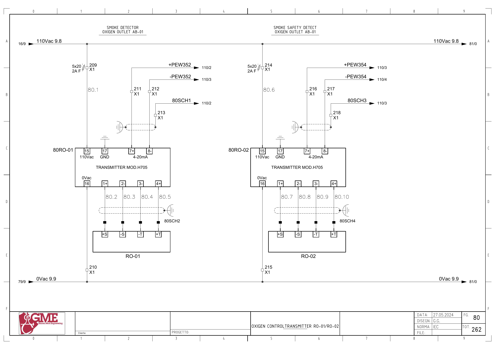
원본 도면 FG110 · PDF111
원본 PDF 열기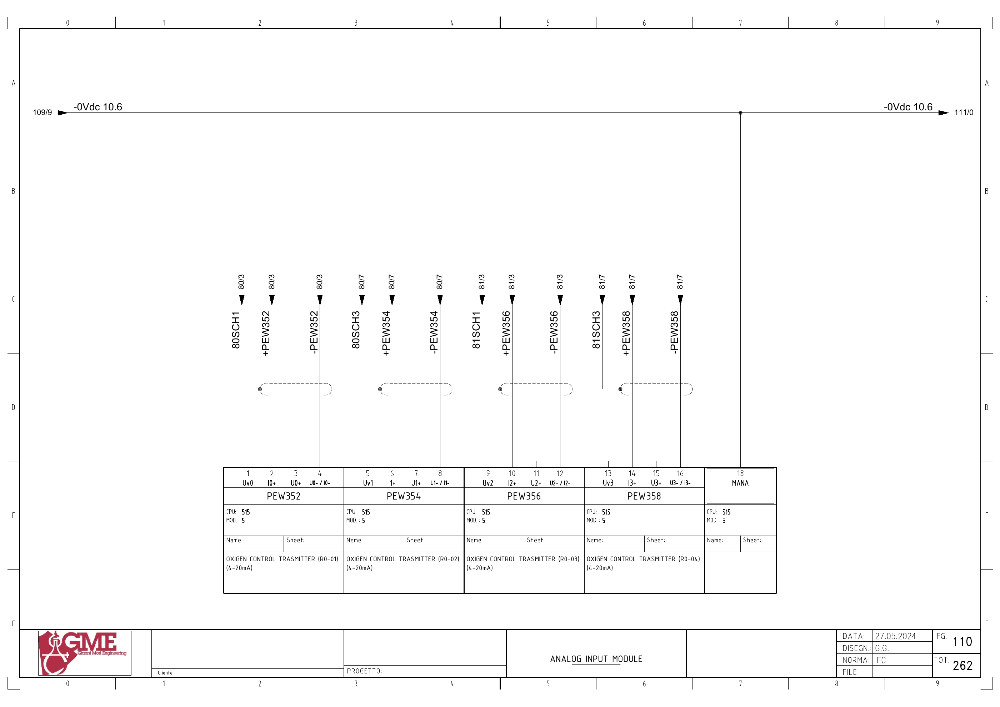
RO02 · 입력부터 사용값까지
| 구간 | 원본·관찰 대상 |
|---|---|
| 백업 심볼 | {"원본 심볼": "r002", "백업 주소": "%iw354", "자료형": "int", "설명": "oxigen control", "색인 세그먼트": "_7ev", "문서 ID": "1536"} |
| 센서/전원/단자 경로 | RO02 소자+S/-S/-T/+T → 80RO02 H705:1+/2-/3-/4+; 110Vac X1:214(2A F)→15, 0Vac X1:215→16, GND17; 출력7+/8- → X1:216/217 → +PEW354/-PEW354; X1:218 / 80SCH3 |
| 모듈 도면 표기 | CPU515 / MOD5 / PEW354: I1+6, U1-/I1-8 4–20mA / 산소 표시 환산·단위 확인 전 |
| 환산 호출 | 원본 1749 / Part 516 CRefRID 351 / CodeBlock 528 RID 5 호출 앞 en 조건: (OFF) IN0 값 핀: ON |
| 각 호출의 값 핀 | IN0 ← ON Analog_input ← R002 Coeff ← Coeff.COEFF_R02 Zero ← Coeff.ZERO_R02 OutValue ← Data.Oxigen_RO02 Out_of_range ← Allarm.RO02_OFR |
호출 앞 접점·원본 핀배선
| Gate/핀·값 | 원본 식별 |
|---|---|
| Contact/operand / OFF | Part 535 / Wire 529 / ORef 522 / RID 34 |
| CRef/IN0 / ON | Part 516 / Wire 530 / ORef 523 / RID 1 |
| CRef/Analog_input / R002 | Part 516 / Wire 531 / ORef 524 / RID 116 |
| CRef/Coeff / Coeff.COEFF_R02 | Part 516 / Wire 532 / ORef 525 / RID 117 |
| CRef/Zero / Coeff.ZERO_R02 | Part 516 / Wire 533 / ORef 526 / RID 118 |
| CRef/OutValue / Data.Oxigen_RO02 | Part 516 / Wire 534 / ORef 527 / RID 119 |
| CRef/Out_of_range / Allarm.RO02_OFR | Part 516 / Wire 24 / ORef 23 / RID 395 |
증상별 관찰·배제·다음 확인
| 증상 | 확인할 구간 | 결과에 따른 다음 확인·근거 |
|---|---|---|
| 값이0·고정이거나 물리 상태와 다름 | %iw354 원시값과 Data.Oxigen_RO02을 같은 시각에 기록. RO02 소자+S/-S/-T/+T → 80RO02 H705:1+/2-/3-/4+; 110Vac X1:214(2A F)→15, 0Vac X1:215→16, GND17; 출력7+/8- → X1:216/217 → +PEW354/-PEW354; X1:218 / 80SCH3 | 원시값도 고정이면 센서·전원·변환기·단자·모듈진단을 구간별로 대조합니다. 원시값이 변하면 IN0/en·각Coeff/Zero·환산·쓰기 위치를 대조합니다. 실제 허가와 모듈 설정은 확인 전입니다. 원본 1749 / Part 516 |
| 변환값이 범위를 벗어나거나 갑자기 변함 | Allarm.RO02_OFR·원시값·환산 직후 값·후속값을 분리합니다. 도면 참고 범위: 4–20mA / 산소 표시 환산·단위 확인 전 | OFR·범위 이상 -9999와 허가 해제0의 근거를 확인합니다. 계수·영점·현재 단위·정수 자료형·ENO·호출 순서를 대조합니다. 값을 임의로 보정하지 않습니다. 원본 환산·범위 이상 |
| HMI 표시와 PLC값이 맞지 않음 | 참고 OutValue Data.Oxigen_RO02와 기존 HMI 설정 주소를 비교합니다. 서로 다른 값의 출처·시각·자료형·단위를 기록합니다. | 다른 원본 쓰기가 0곳 있습니다. 아래 정확한 쓰기 목록과 현재 호출을 대조합니다. HMI 설정 행이 없어도 임의 주소를 배정하지 않습니다. |
| 알람이 반복되거나 리셋 뒤 응답이 다름 | 아래 읽기 위치에서 실제 사용 변수·비교값·기억·운전 허가와 최초 알람을 확인합니다. Data.Oxigen_RO02만으로 원인을 확정하지 않습니다. | 센서 원인 해소·알람 래치·Reset 접점·재기동 허가·최종 출력·물리 응답을 각각 기록합니다. OFR 읽기가 없음을 미사용으로 해석하지 않습니다. 관련 공정 정지·복구 근거 |
원시 입력의 Inputs 복사
| 복사·정적 조건 | 값·근거 |
|---|---|
| Inputs.RO_02 True | R002 원본 1071 / Part 147 |
환산값의 전체 정확한 Global 쓰기·읽기
| 방향·블록 | 핀·정확한 근거 | 현재 확인 |
|---|---|---|
| write / analog input conversion | 원본 1749 / Part 516 CRef/OutValue / Wire 534 / ORef 527 | 현재 실행·값·설정 확인 전 |
| read / analog input conversion | 원본 1750 / Part 566 Add/in1 / Wire 590 / ORef 579 | 현재 실행·값·설정 확인 전 |
| read / allarms 3 | 원본 1985 / Part 669 Sub/in2 / Wire 720 / ORef 701 | 현재 실행·값·설정 확인 전 |
읽는 비교·연산의 값 출처·자료형·원본 핀
| 읽기 위치·원본 형식 | 접점·비교·값 연결 | ||||||||||||||||
|---|---|---|---|---|---|---|---|---|---|---|---|---|---|---|---|---|---|
| 원본 1750 / Part 566 [{"attributes": {"Name": "Card", "Type": "Cardinality"}, "value": "2"}, {"attributes": {"Name": "SrcType", "Type": "Type"}, "value": "Int"}] |
| ||||||||||||||||
| 원본 1985 / Part 669 [{"attributes": {"Name": "SrcType", "Type": "Type"}, "value": "Int"}] |
|
범위 이상 OFR의 정확한 Global 참조
| 방향·블록 | 핀·정확한 근거 | 현재 확인 |
|---|---|---|
| write / analog input conversion | 원본 1749 / Part 516 CRef/Out_of_range / Wire 24 / ORef 23 | 현재 실행·값·설정 확인 전 |
색인에 읽기가 없더라도 HMI/외부 경보·미복원 자료·현재 프로그램의 사용 여부를 확정하지 않습니다.
기존 HMI 설정 참고
| 태그 | 설정 주소 | Access Name |
|---|---|---|
| I_RO_02 | DB13,INT70 | PLC |
같은 이름의 HMI 설정과 OutValue 사이의 현재 DB멤버·주소·표시환산 연결은 확인 전입니다.
원본 도면 FG80 · PDF81
원본 PDF 열기원본 도면 FG110 · PDF111
원본 PDF 열기RO03 · 입력부터 사용값까지
| 구간 | 원본·관찰 대상 |
|---|---|
| 백업 심볼 | {"원본 심볼": "r003", "백업 주소": "%iw356", "자료형": "int", "설명": "oxigen control", "색인 세그먼트": "_7ev", "문서 ID": "1535"} |
| 센서/전원/단자 경로 | RO03 소자+S/-S/-T/+T → 81RO03 H705:1+/2-/3-/4+; 110Vac X1:219(2A F)→15, 0Vac X1:220→16, GND17; 출력7+/8- → X1:221/222 → +PEW356/-PEW356; X1:223 / 81SCH1 |
| 모듈 도면 표기 | CPU515 / MOD5 / PEW356: I2+10, U2-/I2-12 4–20mA / 산소 표시 환산·단위 확인 전 |
| 환산 호출 | 원본 1750 / Part 558 CRefRID 351 / CodeBlock 577 RID 5 호출 앞 en 조건: (OFF) IN0 값 핀: ON |
| 각 호출의 값 핀 | IN0 ← ON Analog_input ← R003 Coeff ← Coeff.COEFF_R03 Zero ← Coeff.ZERO_R03 OutValue ← Data.RO03 Out_of_range ← Allarm.RO03_OFR |
호출 앞 접점·원본 핀배선
| Gate/핀·값 | 원본 식별 |
|---|---|
| Contact/operand / OFF | Part 594 / Wire 21 / ORef 22 / RID 34 |
| CRef/IN0 / ON | Part 558 / Wire 583 / ORef 572 / RID 1 |
| CRef/Analog_input / R003 | Part 558 / Wire 584 / ORef 573 / RID 121 |
| CRef/Coeff / Coeff.COEFF_R03 | Part 558 / Wire 585 / ORef 574 / RID 122 |
| CRef/Zero / Coeff.ZERO_R03 | Part 558 / Wire 586 / ORef 575 / RID 123 |
| CRef/OutValue / Data.RO03 | Part 558 / Wire 587 / ORef 576 / RID 124 |
| CRef/Out_of_range / Allarm.RO03_OFR | Part 558 / Wire 24 / ORef 23 / RID 397 |
증상별 관찰·배제·다음 확인
| 증상 | 확인할 구간 | 결과에 따른 다음 확인·근거 |
|---|---|---|
| 값이0·고정이거나 물리 상태와 다름 | %iw356 원시값과 Data.RO03을 같은 시각에 기록. RO03 소자+S/-S/-T/+T → 81RO03 H705:1+/2-/3-/4+; 110Vac X1:219(2A F)→15, 0Vac X1:220→16, GND17; 출력7+/8- → X1:221/222 → +PEW356/-PEW356; X1:223 / 81SCH1 | 원시값도 고정이면 센서·전원·변환기·단자·모듈진단을 구간별로 대조합니다. 원시값이 변하면 IN0/en·각Coeff/Zero·환산·쓰기 위치를 대조합니다. 실제 허가와 모듈 설정은 확인 전입니다. 원본 1750 / Part 558 |
| 변환값이 범위를 벗어나거나 갑자기 변함 | Allarm.RO03_OFR·원시값·환산 직후 값·후속값을 분리합니다. 도면 참고 범위: 4–20mA / 산소 표시 환산·단위 확인 전 | OFR·범위 이상 -9999와 허가 해제0의 근거를 확인합니다. 계수·영점·현재 단위·정수 자료형·ENO·호출 순서를 대조합니다. 값을 임의로 보정하지 않습니다. 원본 환산·범위 이상 |
| HMI 표시와 PLC값이 맞지 않음 | 참고 OutValue Data.RO03와 기존 HMI 설정 주소를 비교합니다. 서로 다른 값의 출처·시각·자료형·단위를 기록합니다. | 다른 원본 쓰기가 1곳 있습니다. 아래 정확한 쓰기 목록과 현재 호출을 대조합니다. HMI 설정 행이 없어도 임의 주소를 배정하지 않습니다. |
| 알람이 반복되거나 리셋 뒤 응답이 다름 | 아래 읽기 위치에서 실제 사용 변수·비교값·기억·운전 허가와 최초 알람을 확인합니다. Data.RO03만으로 원인을 확정하지 않습니다. | 센서 원인 해소·알람 래치·Reset 접점·재기동 허가·최종 출력·물리 응답을 각각 기록합니다. OFR 읽기가 없음을 미사용으로 해석하지 않습니다. 관련 공정 정지·복구 근거 |
원시 입력의 Inputs 복사
| 복사·정적 조건 | 값·근거 |
|---|---|
| Inputs.RO_03 True | R003 원본 1071 / Part 168 |
환산값의 전체 정확한 Global 쓰기·읽기
| 방향·블록 | 핀·정확한 근거 | 현재 확인 |
|---|---|---|
| write / analog input conversion | 원본 1750 / Part 558 CRef/OutValue / Wire 587 / ORef 576 | 현재 실행·값·설정 확인 전 |
| write / analog input conversion | 원본 1750 / Part 566 Add/out / Wire 592 / ORef 581 | 현재 실행·값·설정 확인 전 |
범위 이상 OFR의 정확한 Global 참조
| 방향·블록 | 핀·정확한 근거 | 현재 확인 |
|---|---|---|
| write / analog input conversion | 원본 1750 / Part 558 CRef/Out_of_range / Wire 24 / ORef 23 | 현재 실행·값·설정 확인 전 |
색인에 읽기가 없더라도 HMI/외부 경보·미복원 자료·현재 프로그램의 사용 여부를 확정하지 않습니다.
호출과 같은 네트워크의 후속 값 명령
| 명령·정적 조건 | 값 핀 | ||||||||||||
|---|---|---|---|---|---|---|---|---|---|---|---|---|---|
| 원본 1750 / Part 566 Add / Data.RO03 [원본 추가 해석: 지원 전 명령 Add] |
|
기존 HMI 설정 참고
| 태그 | 설정 주소 | Access Name |
|---|---|---|
| I_RO_03 | DB13,INT72 | PLC |
같은 이름의 HMI 설정과 OutValue 사이의 현재 DB멤버·주소·표시환산 연결은 확인 전입니다.
원본 도면 FG81 · PDF82
원본 PDF 열기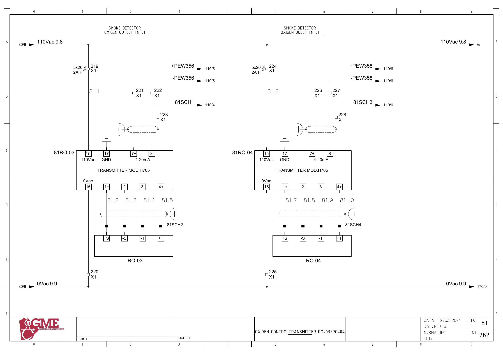
원본 도면 FG110 · PDF111
원본 PDF 열기RO04 · 입력부터 사용값까지
| 구간 | 원본·관찰 대상 |
|---|---|
| 백업 심볼 | {"원본 심볼": "r004", "백업 주소": "%iw358", "자료형": "int", "설명": "oxigen control", "색인 세그먼트": "_7ev", "문서 ID": "1534"} |
| 센서/전원/단자 경로 | RO04 소자+S/-S/-T/+T → 81RO04 H705:1+/2-/3-/4+; 110Vac X1:224(2A F)→15, 0Vac X1:225→16, GND17; 출력7+/8- → X1:226/227 → +PEW358/-PEW358; X1:228 / 81SCH3 |
| 모듈 도면 표기 | CPU515 / MOD5 / PEW358: I3+14, U3-/I3-16 4–20mA / 산소 표시 환산·단위 확인 전 |
| 환산 호출 | 원본 1751 / Part 575 CRefRID 351 / CodeBlock 587 RID 5 호출 앞 en 조건: (OFF) IN0 값 핀: ON |
| 각 호출의 값 핀 | IN0 ← ON Analog_input ← R004 Coeff ← Coeff.COEFF_R04 Zero ← Coeff.ZERO_R04 OutValue ← Data.RO04 Out_of_range ← Allarm.RO04_OFR |
호출 앞 접점·원본 핀배선
| Gate/핀·값 | 원본 식별 |
|---|---|
| Contact/operand / OFF | Part 594 / Wire 588 / ORef 581 / RID 34 |
| CRef/IN0 / ON | Part 575 / Wire 589 / ORef 582 / RID 1 |
| CRef/Analog_input / R004 | Part 575 / Wire 590 / ORef 583 / RID 128 |
| CRef/Coeff / Coeff.COEFF_R04 | Part 575 / Wire 591 / ORef 584 / RID 129 |
| CRef/Zero / Coeff.ZERO_R04 | Part 575 / Wire 592 / ORef 585 / RID 130 |
| CRef/OutValue / Data.RO04 | Part 575 / Wire 593 / ORef 586 / RID 131 |
| CRef/Out_of_range / Allarm.RO04_OFR | Part 575 / Wire 24 / ORef 23 / RID 399 |
증상별 관찰·배제·다음 확인
| 증상 | 확인할 구간 | 결과에 따른 다음 확인·근거 |
|---|---|---|
| 값이0·고정이거나 물리 상태와 다름 | %iw358 원시값과 Data.RO04을 같은 시각에 기록. RO04 소자+S/-S/-T/+T → 81RO04 H705:1+/2-/3-/4+; 110Vac X1:224(2A F)→15, 0Vac X1:225→16, GND17; 출력7+/8- → X1:226/227 → +PEW358/-PEW358; X1:228 / 81SCH3 | 원시값도 고정이면 센서·전원·변환기·단자·모듈진단을 구간별로 대조합니다. 원시값이 변하면 IN0/en·각Coeff/Zero·환산·쓰기 위치를 대조합니다. 실제 허가와 모듈 설정은 확인 전입니다. 원본 1751 / Part 575 |
| 변환값이 범위를 벗어나거나 갑자기 변함 | Allarm.RO04_OFR·원시값·환산 직후 값·후속값을 분리합니다. 도면 참고 범위: 4–20mA / 산소 표시 환산·단위 확인 전 | OFR·범위 이상 -9999와 허가 해제0의 근거를 확인합니다. 계수·영점·현재 단위·정수 자료형·ENO·호출 순서를 대조합니다. 값을 임의로 보정하지 않습니다. 원본 환산·범위 이상 |
| HMI 표시와 PLC값이 맞지 않음 | 참고 OutValue Data.RO04와 기존 HMI 설정 주소를 비교합니다. 서로 다른 값의 출처·시각·자료형·단위를 기록합니다. | 다른 원본 쓰기가 0곳 있습니다. 아래 정확한 쓰기 목록과 현재 호출을 대조합니다. HMI 설정 행이 없어도 임의 주소를 배정하지 않습니다. |
| 알람이 반복되거나 리셋 뒤 응답이 다름 | 아래 읽기 위치에서 실제 사용 변수·비교값·기억·운전 허가와 최초 알람을 확인합니다. Data.RO04만으로 원인을 확정하지 않습니다. | 센서 원인 해소·알람 래치·Reset 접점·재기동 허가·최종 출력·물리 응답을 각각 기록합니다. OFR 읽기가 없음을 미사용으로 해석하지 않습니다. 관련 공정 정지·복구 근거 |
원시 입력의 Inputs 복사
| 복사·정적 조건 | 값·근거 |
|---|---|
| Inputs.RO_04 True | R004 원본 1071 / Part 169 |
환산값의 전체 정확한 Global 쓰기·읽기
| 방향·블록 | 핀·정확한 근거 | 현재 확인 |
|---|---|---|
| write / analog input conversion | 원본 1751 / Part 575 CRef/OutValue / Wire 593 / ORef 586 | 현재 실행·값·설정 확인 전 |
범위 이상 OFR의 정확한 Global 참조
| 방향·블록 | 핀·정확한 근거 | 현재 확인 |
|---|---|---|
| write / analog input conversion | 원본 1751 / Part 575 CRef/Out_of_range / Wire 24 / ORef 23 | 현재 실행·값·설정 확인 전 |
색인에 읽기가 없더라도 HMI/외부 경보·미복원 자료·현재 프로그램의 사용 여부를 확정하지 않습니다.
기존 HMI 설정 참고
| 태그 | 설정 주소 | Access Name |
|---|---|---|
| I_RO_04 | DB13,INT74 | PLC |
같은 이름의 HMI 설정과 OutValue 사이의 현재 DB멤버·주소·표시환산 연결은 확인 전입니다.
원본 도면 FG81 · PDF82
원본 PDF 열기원본 도면 FG110 · PDF111
원본 PDF 열기3. 차이·미확인 사항
| 항목 | 관찰·다음 확인 | 채널 |
|---|---|---|
| SM-07 / 호출 앞 OFF와 내부 IN0=ON의 차이 | TC05·TC07·TC10·RO01~RO04의 호출 앞 en 접점은 OFF이며 IN0 값 핀은 ON입니다. 두 조건과 현재 호출·OFF 값을 각각 확인합니다. 호출되지 않았을 때와 호출 후 IN0가 해제됐을 때의 출력/OFR 유지·0 쓰기를 구분하며 접점을 임의로 바꾸지 않습니다. | TC05, TC07, TC10, RO01, RO02, RO03, RO04 |
| SM-01 / PT100 변환기와 TC05 범위 차이 | TC04/05는 FG79 PT100→79KA1/2→아날로그 입력 경로입니다. TC05의FG79 -30~250°C와FG104 -30~350°C, 심볼 설명의TC04 이름을 각 출처대로 보존합니다. 현재 명판·변환기범위·모듈설정·계수/영점을 대조합니다. | TC04, TC05 |
| SM-02 / PSH01과 PC01의 다른 값 | PSH01 %IW284→Data.Press_PC01과 PC01 %IW322→Data.PC_01은 다른 입력/출력입니다. Data.Press_PC01은 복원된정확한 Global에서 호출 출력만 확인했고 Data.PC_01은1901/1987에서 읽습니다. 현재 PID·HMI 매핑은 별도 확인합니다. | PSH01, PC01 |
| SM-03 / RO03의 후속 Add | 1750 Part566은 Int Add이며 원본 피연산자 Data.Oxigen_RO02와 상수11·출력Data.RO03을 보존합니다. RO03 원시입력의 호출환산값과 RO02+11의 후속쓰기는 다른 값의 출처이며 현재 호출·쓰기 순서를 확인합니다. 이 문서는 계산 실행 결과가 아닙니다. | RO03 |
| SM-04 / 백업 기존 simulation 쓰기 | TC01/02의 변환값에는 원본1092 simulation 블록의 추가 쓰기가 있습니다. 현재 호출·모드·쓰기 순서는 확인 전이며 이 참조는 원본 구조 분석입니다. 새 시뮬레이터 작성·수정·행동 시험은 진행하지 않습니다. | TC01, TC02 |
| SM-05 / SPARE와 보조 채널을 실물로 확정하지 않음 | TC07는FG78/107 SPARE 표시, TC10는FG171 PEW390/392 SPARE입니다. TC09는386/388 회로와원본IW386 호출을 따로봅니다. 예약IW258/262와나머지채널을새실물센서로배정하지 않습니다. | TC07, TC09, TC10 |
| SM-06 / HMI 설정 주소와 물리 단위 | 기존 HMI 행의 주소를 보존하되 같은 이름만으로 현재 DB의 멤버 오프셋·전달·표시 단위·스케일을 확정하지 않습니다. TC09/10와 DP01/02의기존 설비 분류 행은 없으므로 별칭으로 찾거나 자동 배정하지 않습니다. 산소 원본 비교0/5/20/195/200은현재 %단위로 환산하지 않습니다. | TC01, TC02, TC03, TC04, TC05, TC06, TC07, TC09, TC10, PSH01, PSH02, PSH03, PC01, DP01, DP02, RO01, RO02, RO03, RO04 |
기존 자료 불일치18건·현장 확인1,060건·설계 시험577건은 미확정 상태를 유지합니다. 이 작업지는 근거 대조이며 수리완료·보호설정 승인·현재 CPU 실행 검증이 아닙니다.
4. 원본 구조·범위 확인
42개 네트워크의 Part·Wire·ORef·CRef/CodeBlock 선언을 정적 근거 JSON에 보존합니다. Local/다른범위는 정확한 Global 참조와 합치지 않습니다. 모든 계수·영점값의 전체 참조도 JSON에 포함합니다.
| 블록·제목 | 원본 XML |
|---|---|
| 원본 1071 hmi inputs / analog | 원본 XML |
| 원본 1092 simulation / | 원본 XML |
| 원본 1658 signal linearization / | 원본 XML |
| 원본 1659 signal linearization / | 원본 XML |
| 원본 1705 valve control loop / mv03 controlled by psh03 | 원본 XML |
| 원본 1709 valve control loop / mv06 controlled by psh02 | 원본 XML |
| 원본 1710 valve control loop / the working tool has a low range | 원본 XML |
| 원본 1731 analog input conversion / tc04 | 원본 XML |
| 원본 1732 analog input conversion / tc-05 | 원본 XML |
| 원본 1733 analog input conversion / tc-09 | 원본 XML |
| 원본 1734 analog input conversion / tc-10 | 원본 XML |
| 원본 1739 analog input conversion / tc-01 | 원본 XML |
| 원본 1740 analog input conversion / tc-02 | 원본 XML |
| 원본 1741 analog input conversion / tc-03 | 원본 XML |
| 원본 1742 analog input conversion / tc-06 | 원본 XML |
| 원본 1743 analog input conversion / tc-07 | 원본 XML |
| 원본 1745 analog input conversion / psh-01 | 원본 XML |
| 원본 1746 analog input conversion / psh-02 | 원본 XML |
| 원본 1747 analog input conversion / psh-03 | 원본 XML |
| 원본 1748 analog input conversion / r0-01 | 원본 XML |
| 원본 1749 analog input conversion / r0-02 | 원본 XML |
| 원본 1750 analog input conversion / r0-03 | 원본 XML |
| 원본 1751 analog input conversion / r0-04 | 원본 XML |
| 원본 1773 analog input conversion / dp-01 | 원본 XML |
| 원본 1774 analog input conversion / dp-02 | 원본 XML |
| 원본 1775 analog input conversion / pc-01 | 원본 XML |
| 원본 1868 burner control / enable burner cleaning sequence | 원본 XML |
| 원본 1883 filter / time work/pause by dp01 | 원본 XML |
| 원본 1884 filter / time work/pause by dp02 | 원본 XML |
| 원본 1886 filter / enabling sleeve washing | 원본 XML |
| 원본 1901 filter / dp-01 control loop | 원본 XML |
| 원본 1980 allarms 3 / low tc03 temperature | 원본 XML |
| 원본 1981 allarms 3 / max tc04 temperature | 원본 XML |
| 원본 1982 allarms 3 / oxigen analyzer out of range | 원본 XML |
| 원본 1983 allarms 3 / oxigen too high | 원본 XML |
| 원본 1984 allarms 3 / ro01 oxigen low limit | 원본 XML |
| 원본 1985 allarms 3 / ro01-ro02 signal compare fault | 원본 XML |
| 원본 1986 allarms 3 / tc01/tc02 signal compare fault | 원본 XML |
| 원본 1987 allarms 3 / pc-01 low depressure | 원본 XML |
| 원본 1989 allarms 3 / max pressure psh-02 | 원본 XML |
| 원본 1991 allarms 3 / tc-09 filter inlet temperature | 원본 XML |
| 원본 1992 allarms 3 / max filter depressure | 원본 XML |